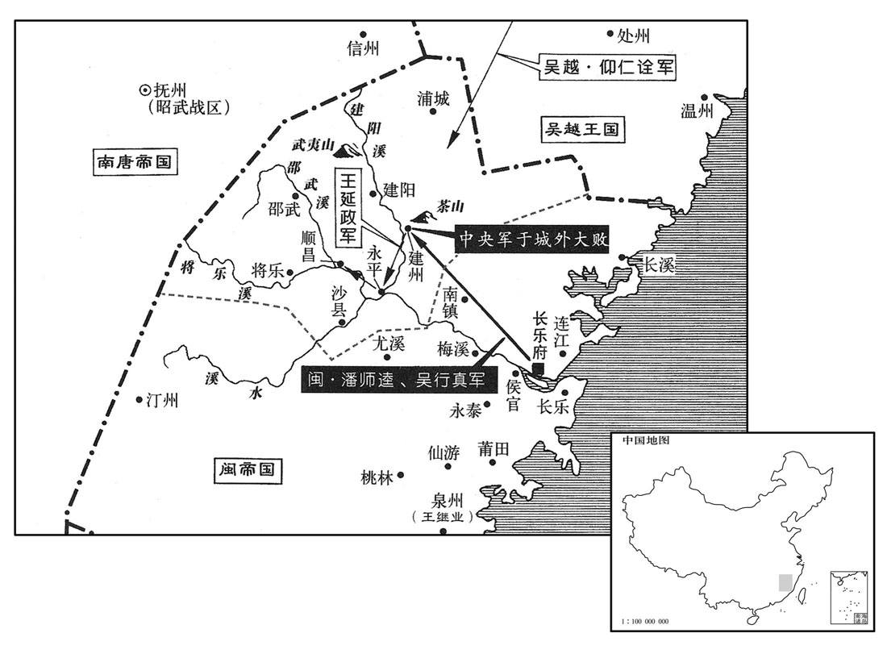
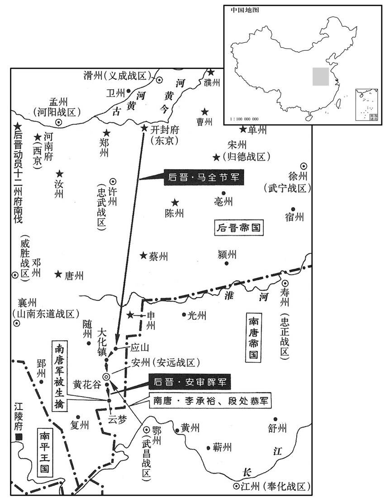
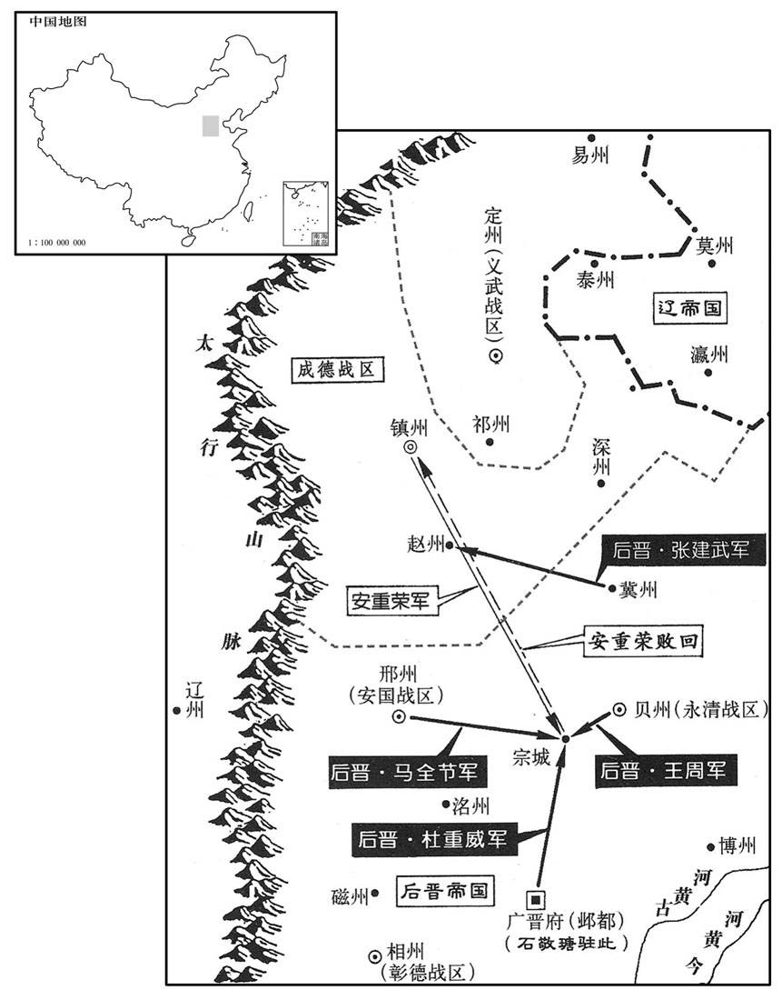
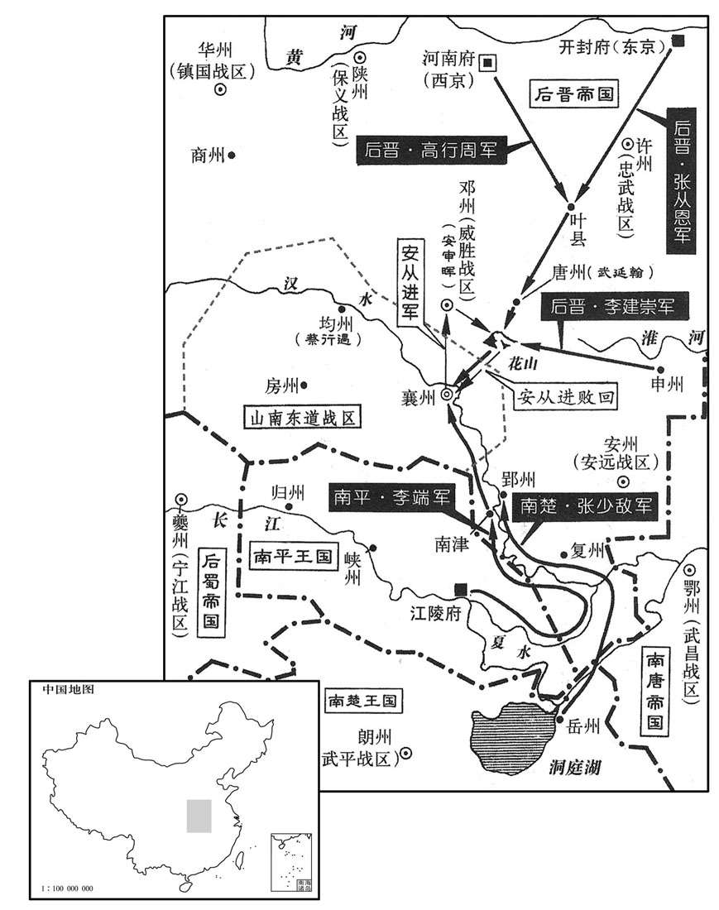

卷次与人物目录 / 卷282
资治通鉴 · 卷第二百八十二【后晋纪三】
公元939年至公元941年 · 原文、白话与胡三省注
本页按胡注本编排保存全卷内容。白话采用本站所据译本，未可靠对应的内容另列说明；事件标题用于定位，并非原书文字。
本卷共138段原文，137段有译文对应，1段缺译或待核对。
卷第二百八十二【后晋纪三】起屠维大渊献（己亥），尽重光赤奋若（辛丑），丑凡三年。
卷首原文与注释
高祖圣章武明德孝皇帝中
公元939年 · 后晋高祖圣章武明德孝皇帝天諨四年
天諨四年〔（己亥、九三九）〕
上传原文的注释括号有异常，字符原样保留；无法可靠划分的段落默认全文显示。
本年事件索引（现代整理）
- 后晋任张从恩为枢密副使
- 冯晖接任朔方节度使招抚党项部众
- 南唐群臣请求徐知诰恢复李姓并立唐宗庙获准
- 南唐改徐温庙号为义祖李建勋夫妇按丧礼服斩衰
- 南唐令齐王李璟详决国事并更名为李异
- 南唐议定徐李二姓祖庙祭祀次序
- 南唐主选择吴王杨恪为其远祖
- 后晋册礼使卢损至福州闽主称病不见
- 南唐追尊吴王杨恪为定宗并追尊先祖
- 后晋任刘知远杜重威为同平章事刘知远辞让
- 灵州戍将王彦忠据怀远城叛乱被招降后遭杀
- 后晋册封回鹘可汗仁美为奉化可汗
- 南唐徐知证等请求改姓李被拒绝
- 南唐主祭祀南郊并大赦
- 后晋废除枢密院改由宰相分判院务
- 后晋重新起用李专美韩昭胤马胤孙房暠
- 闽主王昶因巫言诛杀叔父王延武王延望及其子
- 闽主听信陈守元营建三清殿崇奉道教
- 后晋封马希范为天策上将军
- 南唐改封李景遂为寿王立李景达为宣城王
- 南唐将吴让皇杨溥族人迁居泰州严密防卫
- 南唐立齐王李璟为诸道兵马大元帅
- 闽主削夺建王王继严兵权改名继裕
- 闽主流放林兴并因宫中灾异迁居长春宫
- 后晋发生日食
- 安重荣恃勇自负并公开议论兵强马壮者可为天子
- 后晋任皇甫遇代秘琼后又调其镇昭义
- 闽国北宫失火几乎焚毁宫殿
- 后晋颁行薛融等编定的敕令
- 后晋禁止民间铸造铅锡私钱
- 杨光远弹劾桑维翰营利后桑被外放彰德
- 契丹要求王处直之子王威继任义武节度使遭后晋拒绝
- 闽主纵酒猜忌宗室将领并幽禁叔父王延羲
- 朱文进连重遇发动兵变杀闽主王昶拥立王延羲
- 王延羲自称闽王改名王曦并改元永隆
- 闽兵攻入宫中杀陈守元及蔡守蒙
- 原文记事河汏薄州
- 后晋任冯道为司徒兼侍中并总领中书政务
- 后晋任钱元瓘为天下兵马元帅
- 溪州彭士愁率蛮军侵扰辰澧二州楚军出兵征讨
- 后晋封李从益为郇国公令其奉祀后唐
- 闽王曦派郑元弼入贡后晋以闽国书辞不逊而拒收
- 吴越恭穆夫人马氏卒
- 契丹遣使赴晋并出使吴越
- 楚王马希范设置天策府并任用幕僚将校为官
- 楚将刘勍攻败彭士愁围困其山寨廖匡齐战死
- 后晋禁止新建佛寺
- 闽王曦营建新宫并迁居
- 南汉赵光裔建议与楚恢复往来获准
春，正月，辛亥，以澶州防御使太原张从恩为枢密副使。〔澶，时连翻〕。
春季，正月，辛亥（初九），后晋高祖任用澶州防御使太原人张从恩为枢密副使。
朔方节度使张希崇卒，羌胡寇钞，无复畏惮。〔钞，楚交翻。复，扶又翻〕。甲寅，以义成节度使冯晖为朔方节度使。党项酋长拓跋彦超最为强大，〔酋，慈秋翻。长，知两翻〕。晖至，彦超入贺，〔自其部落入灵州城以贺〕。晖厚遇之，因为于城中治第，〔为，于伪翻；下主为同。治，直之翻〕。丰其服玩，留之不遣，封内遂安。〔质彦超于城中，则党项诸部不敢钞暴于外，故安〕。
朔方节度使张希崇去世，北方的羌胡入侵和抢掠，无所忌惮，甲寅（十二日），后晋高祖任用义成节度使冯晖为朔方节度使。党项族的酋长拓跋彦超最为强大，冯晖到镇后，拓跋彦超来镇祝贺，冯晖待他很是厚重，在城中替他修建宅第，置放了很多华服珍玩，留下他不让回去。这样，辖境之内始安宁下来。
唐群臣江王知证等累表请唐主复姓李，立唐宗庙，乙丑，唐主许之。群臣又请上尊号，〔上，时掌翻〕。唐主曰：「尊号虚美，且非古。」遂不受。其后子孙皆踵其法，不受尊号，又不以外戚辅政，宦者不得预事，皆他国所不及也。
南唐群臣江王徐知证等几次上表请求南唐王徐诰恢复姓李，建立唐室宗庙，乙丑（二十三日），南唐主准许。群臣又请求上帝王尊号，南唐主说：“尊号是一种虚美，并且不是古制。”便没有接受。此后，子孙都依照这种做法，不受尊号，又不用外戚辅理政事，宦官不准干预国事，这都是其他国家所做不到的。
二月，乙亥，改太祖庙号曰义祖。〔唐主初受禅，尊徐温为太祖；今复姓李，以温为义父，故改庙号为义祖〕。己卯，唐主为李氏考妣发哀，与皇后斩衰居庐，如初丧礼，朝夕临凡五十四日。〔衰，仓回翻。临，力鸩翻。初丧之礼，自宕无五十四日之制，唐主亦是依傍汉、晋以日易月之制，居父丧、母丧各二十七日，故为五十四日〕。江王知证、饶王知谔请亦服斩衰；不许。〔知证、知谔皆徐温子〕。李建勋之妻广德长公主假衰绖入哭尽礼，〔【章：十二行本「礼」作「哀」；乙十一行本同；孔本同；张校同。】〕如父母之丧。〔李建勋妻，徐温女也；势利所在，非血气之亲而亲。长，知两翻〕。
二月，乙亥（初三），更改南唐太祖徐温的庙号称为义祖。己卯（初七），南唐主为李氏父母举行哀悼，同皇后一起披麻戴孝，值守于祭堂，像初丧之礼一样，早晚拜祭达五十四天。徐温的亲子江王徐知证、饶王徐知谔请求也披麻戴孝；南唐主不准许。李建勋之妻广德长公主假借丧服到祭堂哀哭尽礼，如同父母之丧一样。
辛巳，诏国事委齐王璟详决，惟军旅以闻。庚寅，唐主更名异〔更，工衡翻。异，皮变翻〕。
辛巳（初九），南唐主下诏书，国事委授齐王李具体决处，只有军事问题要上报南唐主知道。庚寅（十八日），南唐主更名为李。
诏百官议二祚合享礼。〔二祚，徐、李二姓之先也〕。辛卯，未齐丘等议以义祖居七室之东。唐主命居高祖于西室，太宗次之，义祖又次之，皆为不祧之主。群臣言：「义祖诸侯，不宜与高祖、太宗同享，请于太庙正殿后别建庙祀之。」帝曰：〔通鉴既帝晋，此帝与晋帝浑殽，此亦因江南旧史，失于更定〕。「吾自幼托身义祖，〔事见二百六十卷唐昭宗之干宁二年。向非义祖有功于吴，朕安能启此中兴之业﹖」群臣乃不敢言。
南唐主下诏，令百官讨论把徐、李二姓的先人合起来同受祭享的礼制。辛卯（十九日），宋齐丘等建议把义祖徐温的灵位放在第七室的东侧。南唐主命令把唐高祖李渊的灵位放在西室，唐太宗李世民居其次，义祖徐温再其次，都作为肇始之主。群臣说：“义祖是诸侯，不适于与高祖、太宗同样祭享，建议在太庙正殿之后另行建庙祭祀他。”南唐主说：“我从小托身给义祖，如果不是过去义祖有大功于吴国，朕怎能开创今天的中兴之大业？”群臣便不敢再说什么。
唐主欲祖吴王恪，或曰：「恪诛死，〔吴王恪死于唐高宗朝，为房遗爱所诬引，非其罪也〕。不若祖郑王元懿。」唐主命有司考二王曲裔，以吴王孙祎有功，祎子岘为宰相，〔玄宗朝信安王祎有边功，岘相肃宗。岘，户典翻〕。遂祖吴王，云自岘五世至荣。其名率皆有司所撰。〔考异曰：周世宗实录及薛史称擶唐玄宗第六子永王璘曲裔，江南录云宪宗第八子建王恪之玄孙。李昊蜀后主实录云：「唐嗣薛王佑柔为岭南节度使，卒于官，其子知诰流落江淮，遂为徐温养子。」吴越备史云：「擶本潘氏，湖州安吉人，父为安吉砦将。吴将李神福攻衣锦军，过湖州，虏擶归，为仆隶。徐温尝过神福，爱其谨厚，求为养子。以谶云『东海鲤鱼飞上天』，擶始事神福，后归温，故冒李氏以应谶。」刘恕以为擶复姓附会祖宗，固非李氏，而吴越与唐人仇敌，亦非实录。擶少孤遭乱，莫知其祖系；擶曾祖超，祖志，乃与义祖之曾祖、祖同名，知其皆附会也〕。唐主又以历十九帝、三百年，疑十世太少。有司曰：「三十年为世，陛下生于文德，已五十年矣。」〔文德，唐僖宗未年之号。言唐主之生至是年为五十年〕。遂从之。
南唐主想要把自己世系的始祖定为唐高祖的儿子吴王李恪，有人说：“李恪是被唐高宗诛杀的，不如以郑王李元懿为始祖。”南唐主便命有关部门考核二王的后裔，因为吴王的孙子李在历史上有戍守边疆之功，李的儿子李岘又当过宰相，于是以吴王为祖。说是从李岘之后，经过五世而至于南唐主之父李荣。他们的名字，大体都是有关部门所杜撰。南唐主又觉得自唐初至今，已然经历十九个皇帝，长达三百年，觉得自己的世系才经过十世太少。有关部门奏称：“三十年为一世，陛下出生在唐僖宗文德年间，已经五十年了。”于是，便依从了他们。
卢损至福州，〔卢损去年十一月奉册使闽，今乃至福州〕。闽主称疾不见，命弟继恭主之。遣其礼部员外郎郑元弼奉继花表随损入贡。闽主不礼于损，有士人林省邹私谓损曰：「吾主不事其君，不爱其亲，不恤其民，不敬其神，不睦其邻，不礼其，宾，〔宾谓卢损也〕。其能久乎！余将僧服而北逃，会相见于上国耳。」〔时假号偏隅者以中原为上国。余观之，林省邹亦非善士，有樊若水之志而一遂其志耳〕。
卢损作为后晋朝廷的册礼使到达福州，闽主王昶称说有病，不予接见，命他的弟弟王继恭主持招待晋使。派遣他的礼部员外郎郑元弼带着王继恭的表章跟随卢损入朝进贡。闽主对卢损不礼貌，有个士人林省邹私下对卢损说：“我的国主不侍奉其君，不爱护其亲，不体恤其民，不崇敬其神，不敦睦其邻，不礼遇其宾，这样的人，他能够持久吗！我将要穿着僧服而向北逃走，以后会同您相见在中原吧。”
三月，庚戌，唐主追尊吴王恪为定宗孝静皇帝，自曾祖以下皆追尊庙号及谥。
三月，庚戌（初八），南唐主李追尊吴王李恪为定宗孝静皇帝，从他的曾祖以下都追尊庙号和谥称。
己未，诏归德节度使刘知远、忠武节度使杜重威并加同平章事。知远自以有佐命功，重威起于外戚，无大功，耻与之同制，〔制，麻制也。黄忠有功，关羽犹耻与之同列；杜重威何如人，刘知远其肯与之同制乎！英雄倔强之气，大抵然也〕。制下数日，杜门四表辞不受。帝怒，谓赵茔曰：「重威朕之妹夫，知远虽有功，何得坚制命！可落军权，〔刘知远时总宿卫诸军〕。令归私第。」茔拜请曰：「陛下昔在晋阳，兵不过五千，为唐兵十余万所攻，〔事见上卷上年〕。危于朝露，非知远心如铁石，岂能成大业！柰何以小过弃之！窃恐此语外闻，〔闻，音问〕。非所以彰人君之大度也。」帝意乃解，命端明殿学士和凝诣知凝诣知远第谕旨，知远惶恐，起受命。〔君之大度也。」帝意乃解，命端明殿学士和凝诣知远第谕旨，佑远惶恐，起受命。〔君降心以抚其臣，则臣亦自悔。驯服勋旧强悍之气，不容不尔〕。
后晋高祖下诏，命归德节度使刘知远、忠武节度使杜重威一起加官同平章事。刘知远自以为有辅佐后晋高祖创业的功劳，而杜重威是以外戚起家，没有大功，把与他同时受制令加官视为羞耻，制令下达好几天，关了门四次上表推辞不接受。后晋高祖发怒，对赵莹说：“重威是朕的妹夫，知远虽然有功，怎么能坚决拒受制命！可以把他的军权削除，让他回到自己家里去。”赵莹下拜请求说：“陛下从前在晋阳时，兵众不超过五千，被唐兵十余万人所进攻，危险得像早晨的露水一样，当时若不是知远心如铁石似的坚定，怎能成今日的大业！为什么竟因小的过失而丢弃他！我担心这个话如果传出去，是不能够表现作为人君的宏大度量啊！”后晋高祖的心情才舒解了，命端明殿学士和凝到刘知远的府第传谕皇帝的意旨，刘知远感到惶恐，敬起接受制令。
灵州戍将王彦忠据怀远城叛，〔怀远县属灵州。赵珣聚米图经曰：唐怀远镇在灵州北约一百余里。宋时西夏强盛，即其地置兴州，其四九十余里即贺兰山〕。上遗供奉官齐延祚往招谕之；彦忠降，延祚杀之。〔降，户江翻〕。上怒曰：「朕践阼以来，未尝失信于人，彦忠己输使出迎，延祚何得擅杀之！」除延祚名，重杖配流。议者犹以为延祚不应免死。〔以其杀降失信，继此将无以怀远人也〕。
灵州戍将王彦忠据怀远城叛变，后晋高祖派供奉官齐延祚去招谕他投降；王彦忠投降了，齐延祚却把他杀了。后晋高祖发怒，说道：“朕登极以来，不曾失信于人，王彦忠已经打着旌旗仪仗出迎投降，齐延祚怎么能擅自把他杀了！”便罢了齐延祚的官，重杖责打之后流放发配到远地。议论的人还觉得对齐延祚不应当免除他的死刑。
辛酉，册回鹘可汗仁美为奉化可汗。〔时回鹘比年遣使朝贡，故册命之。按五代会要：回鹘自唐会昌间为黠戛斯所破，西奔居于甘州，梁干化元年遣使入贡。至唐同光二年四月，其本国权知可汗仁美遣仗入贡，命郑、何延嗣时节册仁美为英义可汗。其年十一月，仁美卒，其弟狄银嗣立，遣都督安千等来朝贡。狄银卒，阿咄欲立，亦遣使来贡。天成三年，其权知可汗仁裕遣使入贡。其年三月，命使册仁裕为顺化可汗。晋天福三年，遗使朝贡；四年三月，又遣使来朝，兼贡方物。其月，命卫尉卿邢德昭持节訧册为奉化可汗。若据会要，则「仁美」当作「仁裕」〕。
辛酉（十九日），后晋朝廷册立回鹘可汗仁美为奉化可汗。
夏，四月，唐江王徐知证等请亦姓李；〔欲改其本姓国姓以自亲〕。不许。
夏季，四月，南唐江王徐知证等也请求改姓为李，南唐主李没有答应。
辛巳，唐主祀南郊；癸未，大赦。
辛巳（初十），南唐主祭祀南郊；癸未（十二日），实行大赦。
梁太祖以来，军国大政，天子多与崇政、枢密使议，〔梁与崇政使议，唐与枢密使议。崇政使即枢密使之职也〕。宰相受成命，行制敕，讲典故，治文事而已。〔治，直之翻〕。帝惩唐明宗之世安重诲专横，〔专横事见唐明宗纪。横，户孟翻〕。故即位之初，但命桑维翰兼枢密使。及刘处让为枢密使，奏对多不称旨，〔刘处让攘桑维翰枢密使见上卷上年。称，尺证翻〕。会处让遭母丧，甲申，废枢密院，以印付中书，院事皆委宰相分判。以副使张从恩为宣徽使，直学士。仓部郎中司徒诩、工部郎中颜衎并罢守本官。〔郑樵氏族略曰：帝王世纪，舜为尧司徒，支孙氏焉。直学士，枢密直学士也。二人本官，仓部、工部也。衎，苦旱翻〕。然勋臣近习不知大体，习于故事，每欲复之。〔史言帝王命相，当悉委以政事，不当置枢密使以分其权〕。
自从后梁太祖朱温以来，军国大政，天子往往同崇政使、枢密使议定，宰相不过是接受成命，颁行制敕，讲求典故，治理文事而已。后晋高祖借鉴后唐明宗时期安重诲专横的教训，因此，即位之初，只任用桑维翰兼枢密使。到刘处让任枢密使时，奏言对事往往不能称意，适逢上刘处让的母亲去世而守丧，甲申（十三日），废除枢密院，把印交给中书省，枢密院的事务都委交宰相分别判处。任用枢密副使张从恩为宣徽使；直学士、仓部郎中司徒诩，工部郎中颜一起罢守本官。然而勋旧大臣近来的习惯不识大体，习惯于老的做法，常常想恢复老办法。
帝以唐之大臣除名在两京者皆贫悴，〔李专美等除名见上卷元年。悴秦醉翻〕。复以李专美为赞善大夫，丙戌，以韩昭胤为兵部尚书，马胤孙太子宾客，房暠为右骁卫大将军，并致仕。
后晋高祖因为后唐的大臣罢除官职后仍在东、西两京的都比较清贫困迫，便重新任用李专美为赞善大夫，丙戌（十五日），任命韩昭胤为兵部尚书，马胤孙为太子宾客，房为右骁卫大将军，一同以此终官退休。
闽主忌其叔父前建州刺史延武、户部尚书延望才名，巫者林兴与延武有怨，托鬼神语云：「延武、延望将为变。」闽主不复诘，〔诘，去吉翻〕。使兴帅壮士就第杀之，〔帅，读曰率〕。并其五子。
闽主王昶忌妒其叔父前建州刺史王延武、户部尚书王延望的才干和名声，卜巫人林兴与王延武有怨隙，借托鬼神的话，说“王延武、王延望将要叛变。”闽主没有再查核，就让林兴率领强壮兵卒在他们的府第中把他们杀死，连同他们的五个儿子也一齐杀了。
闽主用陈守元言，作三清殿于柰中，〔道家以上清、玉清、太清为三清〕。以黄金数千斤铸宝皇大帝、天尊、老君像，昼夜作乐，焚香祷祀，求神丹。政无大小，皆林兴传宝皇命决之。
闽主采用陈守元的建议，在宫中建造三清殿，用黄金数千斤铸造宝皇大帝、天尊、老君像，昼夜作乐，焚香祷告，寻求神丹。政事不论大小，都由林兴传达宝皇的神命来决定。
戊申，加楚王希范天策上将军，赐印，听开府置官属。〔梁开平四年已尝加楚王殷天策上将军，今晋复以命其子希范〕。
五月，戊申（初七），后晋朝廷加封楚王马希范为天策上将军，赐予官印，听由他开府设置官属。
辛亥，唐徙吉王景遂为寿王，立寿阳公景达为宣城王。
辛亥（初十），南唐调徙吉王李景遂为寿王，册立寿阳公李景达为宣城王。
唐人迁让皇之族于泰州，号永宁宫，防卫甚严。〔泰州本扬州海陵县，吴干贞中立制置院，南唐升元元年升为泰州。考异曰：十国纪年：「唐人迁让皇之放于泰州，号永宁宫，守卫甚严，不敢与国人通婚姻，久而男女自为匹偶。」江表志：「让皇子及五岁，遣中使拜官，赐朝服，即日而卒。」按唐烈祖受禅，使让皇居故宫，称臣上表，慕仁厚之名若恶杨氏则灭之而已。何必如此之迂也！他书皆未之见，不知纪年据何书，今不敢〕。康化节度使兼中书令杨珙称疾，罢归永宁宫。〔康化军亦吴于统内所置节镇，或南唐置之，其圴今无可考〕。乙丑，以平卢节度使兼中书令杨琏为康化节度使；琏固辞，请终丧，〔终让皇之丧也〕从之。
南唐人把吴国让皇杨溥的族人迁移到泰州，号永宁宫，防卫很严密。康化节度使兼中书令杨珙称说有病，罢官回到永宁宫。乙丑（二十四日），任用平卢节度使兼中书令杨琏为康化节度使；杨琏坚决推辞，请求守完让皇的丧事，南唐主答应了他。
唐主将立齐王璟为太子，固辞；乃以为诸道兵马大元帅、判六军诸卫、守太尉、录尚书事、升扬二州牧。〔南唐以升州为西都，扬州为东都，故二州置牧〕。
南唐主将要立齐王李为太子，李坚决辞让；便把他任用为诸道兵马大元帅、判六军诸卫、守太尉、录尚书事、扬二州牧。
闽判六军诸卫建王继严得士心，闽主忌之，六月，罢其兵柄，更名继裕；〔更，工衡翻〕。以弟继镕〔【章：十二行本「镕」作「镛」；乙十一行本同；孔本同。】〕判六军，去诸卫字。〔去，羌吕翻〕。
闽国的判六军诸卫建王王继严能得将士之心，闽主王昶嫉妒他，六月，罢免了他的兵权，把他的名字改为继裕；任用闽王之弟王继熔为判六军，删去诸卫二字。
林兴诈觉，流泉州。望气者言宫中有灾，乙未，闽主徒居长春宫。
林兴的欺诈被发觉，流放到泉州。望气的人说宫中要发生灾祸，乙未（二十五日），闽主迁居到长春宫。
秋，七月，庚子朔，日有食之。
秋季，七月，庚子朔（初一），出现日食。
成德节度使安重荣出于行伍，〔行，户刚翻〕。性粗率，〔粗，与麤同〕。恃勇骄暴，每谓人曰：「今世天子，兵强马壮则为之耳。」〔安重荣粗暴一夫耳，使其强梁亦何所至！然其所以强梁者，亦习见当时之事，遂起非望之心耳〕。府廨有幡竿高数十尺，尝挟弓矢谓左右曰：「我能中竿上龙〔【章：十二行本「龙」下有「首」字；乙十一行本同；孔本同；张校同；退斋校同。】〕者，必有天命。」一发中之，〔廨，古隘翻。高，居号翻。中，竹仲翻〕。以是益自负。
成德节度使安重荣出身于行伍，性情粗率，倚仗自己勇武而骄傲暴躁，常常对人们说：“现在的天子，兵强马壮就可以当。”他的衙门里有一个幡竿有几十尺高，他曾经挟着弓箭对左右的人说：“我如果能射中竿上龙首，必有当人君的天命。”一发而射中，由此就更加自负。
帝之遣重荣代秘琼也，〔见上卷二年〕。戒之曰：「琼不受代，当别除汝一镇，勿以力取，恐为患滋深。」重荣由是以帝为怯，谓人曰：「秘琼匹夫耳，天子尚畏之，况我以将相之重，士马之众乎！」每所奏请多踰分，〔分，扶问翻〕。为执政所可否，〔可者则从之，否者不从也〕。意愤愤不快，乃聚亡命，市战马，有飞扬之志。帝知之，义武节度使皇甫遇与重荣姻家，甲辰，徒遇为昭义节度使。〔镇、定接境，恐其合而为变，徒令稍远以离析之〕。
后晋高祖当初派遣安重荣去代替秘琼时，告诫他说：“如果秘琼不接受你去代职，将要为你另委一镇做节度使，不要用武力去夺取，怕以后为患越来越深。”安重荣因此以为后晋高祖怯懦，对别人说：“秘琼是个匹夫小人，天子尚且怕他，何况对我这样有将相的重要地位，有众多兵马的人啊！”有所奏请往往超越本份，被执政者或可或否，心里愤愤不愉快，便聚合亡命之徒，购买战马，有自求飞扬的意图。后晋高祖知道这种情况，义武节度使皇甫遇与安重荣是姻亲，甲辰（初五），把皇甫遇调迁为昭义节度使来隔离他们。
乙巳，闽北宫火，焚宫殿殆尽。
乙巳（初六），闽国北宫失火，把宫殿几乎焚烧殆尽。
戊申，薛融等上所定编敕，行之。〔三年，令薛融等详定编敕，今始上而行之。上，时掌翻〕。
戊申（初九），后晋薛融等上奏所定的编敕，加以施行。
丙辰，敕：「先令天下公私铸钱，〔见上卷上年〕。今私钱多用铅锡，小弱缺薄，宜皆禁之，专令官司自铸。」
丙辰（十七日），后晋高祖敕令：“以前令天下公私铸钱，现在私铸钱多用铅，而且小弱缺薄，应该都加以禁止，专门由主管官司自行铸造。”
西京留守杨光远疏中书侍郎、同平章事桑维翰迁除不公及营邸肆于两都，与民争利；帝不得已，闰月，壬申，出维翰为彰德节度使兼侍中。
西京留守杨光远上疏奏称：中书侍郎、同平章事桑维翰对官吏调、任不公，以及允许任意两都营造官邸，与民争利；后晋高祖不得已，闰七月，壬申（初三），把桑维翰外调为彰德节度使，兼任侍中。
初，义武节度使王处直子威，避王都之难，亡在契丹，〔王都之难，谓囚处直也，见二百七十一卷梁均王龙德元年。难，乃旦翻〕。至是，义武缺帅，〔皇甫遇徒潞，故义武缺帅。帅，所类翻〕。契丹主遣使来言，「请使威袭父土地，如我朝之法。」〔我朝，契丹自谓也。朝，宜遥翻〕。帝辞以「中国之法必自刺史、团练、防御序迁乃至节度使，请遣威至此，渐加进用。」契丹主怒，复遣使来言曰：〔复，扶又翻〕。「尔自节度使为天子，亦有阶级邪！」帝恐其滋蔓不已，厚赂契丹，且请以处直兄孙彰德节度使廷胤为义武节度使以厌其意。〔厌，于涉翻，又如字〕。契丹怒稍解。
以前，义武节度使王处直的儿子王威，为了躲避王都叛乱的灾难，逃亡在契丹。到此时，义武军因为皇甫遇调迁而缺少主帅，契丹主耶得德光遣派使者来说：“请求让王威承袭他父亲的土地，如同我朝的法律规定。”后晋高祖推辞，认为：“中原之法，必须从刺史、团练使、防御使依照顺序迁升，才能到节度使，请把王威派到这里来，逐渐加以进用。”契丹主发怒，再次遣派使者来说道：“你自己从节度使升到天子，也是按阶梯上去的吗！”后晋高祖怕这样做法会滋蔓没有止境，便厚重地贿赂契丹，并且请求用王处直哥哥的孙子彰德节度使王廷胤为义武节度使以满足他们的愿望，契丹的怒气稍有缓解。
初，闽惠宗以太祖元从为拱宸控鹤都，〔闽王审知庙号太祖。从，才用翻；下同〕。及康宗立，更募壮士二千为腹心，号宸卫都，禄赐皆厚于二都；或言二都怨望，将作乱，闽主欲分隶漳、泉二州，二都益怒。闽主好为长夜之饮，强群臣酒，〔好，呼到翻。强，其两翻〕。醉则令左右伺其过失；〔伺，相吏翻〕。从弟继隆醉失礼斩之。屡以猜怒诛宗室，叔父左仆射、同平章事延羲阳为狂愚以避祸，闽主赐以道士服，置武夷山中；〔武夷山在建州崇安县南三十里。朱元晦武夷图序曰：武夷君之名，着自汉世，祀以干鱼，不知果何神也。今崇安有山名武夷，相传即神仙所宅。峰恋严壑，秀拔奇伟，清溪九曲，流出其间。两崖绝壁，人迹所不到处，往往有枯查插石罅间，以庋舟船棺柩之属。柩中遗骸，外列陶器，尚且未坏。颇疑前世道阻未通，川壅未决时，夷俗所居，而汉祀者即其君长，盖亦避世之士，生为众所臣服，没而传以为仙也。武夷山中有道士观，闽主盖置延羲于观中〕。寻复召还，幽于私第。〔复，扶又翻〕。
过去，闽惠宗王把太祖王审知的原来侍从立为拱宸、控鹤二都，等到康宗王昶即位后，又募集壮士二千作为腹心，号称宸卫都，俸禄和赏赐都厚于二都；有人传言，二都有怨气，将要作乱，闽主想把二者分别隶属于漳、泉二州，二都更加愤怒。闽主喜欢作长夜的饮宴，强制群臣喝酒，喝醉了便让左右之人伺机找他的过失；闽主的堂弟王继隆醉后失礼，把他斩了。这样，由于多次猜疑、发怒而诛杀宗室。闽主的叔父左仆射、同平章事王延羲表面上装作狂呆用来躲避祸端，闽主赐给他道士服装，把他放置在武夷山中；不久，又把他召回来，幽禁在他自己的私第。
闽主数侮拱宸、控鹤军使永泰朱文进、光山连重遇，〔数，所角翻。永泰县属福州。晋分弋阳置西阳县，宋孝武大明初置光城县，梁于县置光州，后废州置光城郡，隋废郡置光山县，仍置光州，以县属焉。九域志：县在州西六十里。连重遇之先盖与王潮兄弟同入闽。连，姓也；左传齐有连称〕。二人怨之。会北宫火，求贼不获；闽主命重遇将内外营兵扫除余烬，日役万人，士卒甚苦之。又疑重遇知纵火之谋，欲诛之；内学士陈郯私告重遇。辛巳夜，重遇入直，帅二都兵焚长春宫〔帅，读曰率〕。以攻闽主，使人迎延羲于瓦砾中，呼万岁；〔砾，郎击翻〕。复召外营兵共攻闽主；〔复，扶又翻；下同〕。独宸卫都拒战，闽主乃与李后如宸卫都。〔李后，李春燕也。如，往也〕。此明，〔比，必利翻〕。乱兵焚宸卫都，宸卫都战败，余众千余人奉闽主及李后出北关，至梧桐岭，众稍逃散。延羲使兄子前汀州刺史继业将兵追之，及于村舍，闽主素善射，引弓杀数人。俄而追兵云集，闽主知不免，投弓谓继业曰：「卿臣节安在！」继业曰：「君无君德，臣安有臣节！新君，叔父也，旧君，昆弟也，孰亲孰疏﹖」闽主不复言。继业与之俱还，至陀庄，饮以酒，醉而缢之，〔还，从宣翻，又如字。饮，张禁翻〕。井李后及诸子王继恭皆死。宸卫余众奔吴越。
闽主几次轻侮拱宸、控鹤军使永泰人朱文进、光山人连重遇，二人很怨恨。没过多久，北宫失火，查究放火贼人但没有寻获；闽主命令连重遇带领内外营兵扫除余烬，每天役使上万人，士兵很劳苦。又怀疑连重遇知道纵火的阴谋，想要把他杀了；内廷学士陈郯私下告诉了连重遇。辛巳（十二日）夜，连重遇进宫值勤，率领二都之兵焚烧了长春宫，袭击闽主，派人从瓦砾中把王延羲迎接出来，对着他呼喊万岁，又召集外营的二都兵众共同攻击闽主；只有宸卫都的兵土抗拒进行战斗，闽主便和皇后李春燕避往宸卫都。待到天亮，乱兵焚烧了宸卫。宸卫都打败，剩下的千余人保护着闽主和李后出了北关，到达梧桐岭，剩下的人又有逃散的。王延羲让他哥哥的儿子前汀州刺史王继业带兵追赶他们，一直逃到村舍；闽主平素擅长射术，拉起弓射杀几个人。不多时，追兵云集，闽主自知不能逃脱，便丢下弓箭对王继业说：“你的臣节到哪里去了！”王继业说：“君既然没有君德，臣还有什么臣节！新君，是我的叔父，旧君，是我的兄弟，分得清谁亲谁远吗？”闽主不再说话。王继业同他一起回来，到达陀庄，让他喝酒，醉后把他勒死了。连同李后及几个儿子，王继恭都杀死了。宸卫都的余众投奔吴越。
延羲自称威武节度使、闽国王，更名曦，〔更，工衡翻。曦，王审知少子也〕。改元永隆，〔考异曰：十国纪年，通文四年，延羲自称威武节度使，改元永隆，即晋天福四年也。周世宗实录、薛史、唐余录、南唐烈祖实录、吴越备史及运历图、纪年通谱皆同。惟闽中启运图：「通文四年己亥，闰七月，延羲立，明年庚子，改元永隆，五年甲辰，被弒。」林仁志闽国人，载延羲改年宜不差失。然五代士人撰录国书多不凭旧文，出于记忆及传闻，虽本国近事亦有抵牾者。高远叙事颇有本末，余公绰虽在仁志之后，然亦闽人，故不敢独从仁志所记。又王曦既立，若但称节度使，则不应改元及以其臣为三公、平章事。按晋高祖实录，天福五年十一月甲申，授闽国王延羲威武军节度使、闽国王。是曦先已自称闽国王，纪年脱漏耳〕。赦系囚，颁傁中外。以宸卫弒闽主赴于邻国；谥闽主曰圣神英睿文明广武应道大弘孝皇帝，庙号康宗。遣商人间道奉表称藩于晋；〔间，古苋翻〕。然其在国，置百官皆如天子之制。以太子太传致仕李真为司空兼中书侍郎、同平章事。
五延羲自称威武节度使、闽国王，改名王曦，改年号为永隆。赦放系押的囚犯，对朝廷内外进行赐赏。宣称宸卫都杀了闽主投赴邻国，谥号闽主为圣神英睿文明广武应道大弘孝皇帝，庙号康宗。遣派商人从便道去上表，向后晋朝廷称藩；然而在他的国内，设置百官都如同天子的制度。任用已经以太子太傅名义退休的李真为司空兼中书侍郎、同平章事。
连重遇之攻康宗也，陈守元在宫中，易服将逃，兵人杀之。〔陈守元蛊惑闽主者二世，其死晚矣！〕重遇执蔡守蒙，数以卖官之罪而斩之。〔数，所具翻。蔡守蒙卖官见上卷上年〕。闽王曦既立，遣使诛林兴于泉。〔林兴流泉州见上六月。蜀本「诛」作「追」。
两版字句有差异，建议核对原文。
连重遇攻击康宗时，陈守元正在宫中，换了衣服将要逃跑，兵士把他杀了。连重遇抓住了蔡守蒙，数责他的卖官之罪而把他杀了。闽王王曦即位以后，派使者到泉州去把林兴也杀了。
河汏薄州。〔「薄州」，当作「博州」〕。
本段缺少可靠对应白话，原文完整保留；未使用生成译文。
八月，辛丑，以冯道守司徒兼侍中。壬寅，诏中书知印止委上相，〔旧制：凡宰臣更日知印〕。由是事无巨细，悉委于道。帝尝访以军谋，对曰：「征伐大事，在圣心独断。〔断，丁乱翻〕。臣书年，惟知谨守历代成规而已。」帝以为然。道尝称疾求退，帝使郑王重贵诣第省之，〔省，悉景翻〕。曰：「来日不出，朕当亲往。」道乃出视事。当时宠遇，群臣无与为比。
八月，辛丑（初三），后晋高祖任用冯道守职司徒兼侍中。壬寅（初四），后晋高祖下诏：中书知印只委予上相，从此事无大小，都委交给冯道办理。后晋高祖曾经把关于用兵的谋略征询冯道的意见，冯道回答说：“征伐是国家的大事，取决于圣上意志的独断。我是个书生，只知道谨守历代的成规而已。”后晋高祖以为他说得对。冯道曾经称病要求退职，后晋高祖让郑王石重贵到冯道的府第探视他，并说：“明天还不出来，朕就要亲自去请他。”冯道这才出来视事。当时的宠遇，群臣没有能同他相比的。
己酉，以吴越王元瓘为天下兵马元帅。
己酉（十一日），后晋朝廷任吴越王钱元为天下兵马元帅。
黔南巡内溪州刺史彭士愁引蒋，锦州蛮万余寇辰、沣州，〔唐之盛时，溪州属黔中观察。唐未升黔中观察为黔南节度，后号武泰军，时属蜀境。巡内，言在巡属之内也。「蒋」，当作「奖」。唐长安四年以沅州之沅州之夜郎、渭溪二县置舞州，开元十三年以「舞」、「武」声相近，更名鹤州，二十年又更名业州，大历五年又更名奖州。辰、沣时属楚。黔，渠今翻，又其廉翻〕。焚掠镇戍，遣使乞师于蜀；蜀主以道远，不敨。九月，辛未，楚王希范命左静江指挥使刘勍、决胜指挥使廖匡齐帅衡山兵五千讨之。〔勍，渠京翻。廖，力救翻，今读从力吊翻。帅，读曰率〕。
黔南节度使巡属之内的溪州刺史彭士愁率领奖州、锦州蛮族万余人袭扰辰州、澧州，焚掠镇戍之所，派遣使者到蜀国请求出兵支援；后蜀主孟昶因为道路太远，没有答应。九日，辛未（初三），楚王马希范命令左静江指挥使刘、决胜指挥使廖匡齐率领衡山兵五千去讨伐。
癸未，以唐许王从益为郇国公；奉唐祀。从益尚幼，李后养从益于宫中，奉王淑妃如事母。〔李后，唐明宗曹皇后之女。王淑妃，明宗次妃也，故后事之如母〕。
癸未（十五日），后晋朝廷封后唐许王李从益为郇国公，奉行后唐的祭祀。由于李从益还年幼，后晋高祖的李皇后是后唐明宗曹皇后的女儿，便把许王留养在宫中，又对明宗次妃王淑妃侍奉如同母亲。
冬，十月，庚戌，闽康宗所遣使者郑元弼至大梁。〔是年十二月，闽遣郑元弼随卢损入贡，至是达大，梁，而康宗已于闰七月为闽人所弒矣〕。康宗遗执政书曰：〔遗，于季翻〕。「闽国一从兴运，久历年华，见北辰之帝座频移，〔言中国屡易主也〕。致东海之风帆多阻。」〔言由此不修职贡〕。又求用敌国礼致书往来帝怒其不逊，壬子，诏却其贡物及福、建诸州纲运，令元弼及进奉官林恩部送速归。兵部员外郎李知损上言：「王昶僭慢，宜执留使者，籍没其货。」乃下元弼、恩狱。〔下，户嫁翻〕。
冬季，十月，庚戌（十三日），闽国康宗王曦所遗派的使者郑元弼到达晋朝东京大梁。康宗给执政者的信说：“闽国自从兴运以来，一直统续贡职至今，年华久历，现在，北辰的帝座频繁变换，以致东海的风帆常常受阻。”又要求用对等国家的礼节致书往来。后晋高祖恼怒他的态度不够谦逊，壬子（十五日），下诏退还其贡物以及福州、建州等地的成批纲运的物资，并命令郑元弼及闽国驻后晋朝廷的进奏官林恩部送他们即速回去。兵部员外郎李知损上奏说：“王昶僭越傲慢，应该拘留他的使者，登记没收他的货物。”后晋高祖便把郑元弼、林恩投进监狱里。
吴越恭穆夫人马氏卒。夫人，雄武节度使绰之女也。〔路振九国志：马绰，余杭人，少与钱镠俱事董昌，以女弟妻镠，镠复为元瓘娶绰女。按薛史，梁贞明四年，秦州节度使、检校太傅、同平章事马绰加检校太尉。秦州，雄武军也。镠传又曰：镠恃崇，分两浙为数镇，其节制署而后奏。则其国内节帅皆禀朝命也〕。初，武肃王镠禁中畜声伎，文穆王元瓘年三十余无子，夫人为之请于镠，〔为，于伪翻〕。镠善曰：「吾家祭祀，钕实主之。」〔礼：家妇主先世之祭祀。今马夫人不勡忌而广嗣续，故镠喜其有托〕。乃听元瓘纳妾鹿氏，生弘僔、弘倧；许氏，生弘佐；吴氏，生弘俶；众妾生弘偡、弘亿、〔【章：十二行「亿」下有「弘仪」二字；乙十一行本同；孔本同；张校同。】〕弘偓、弘仰、弘信；〔僔，子损翻。倧，徂冬翻。俶，昌六翻。偡，丈减翻〕。夫人抚视慈爱如一。常置银鹿帐前，坐诸儿于上而弄之。
吴越王钱元的恭穆夫人马氏去世。夫人是雄武节度使马绰之女。以前，武肃王钱禁止内外蓄养歌舞女伎，文穆王钱元年过三十多还没有儿子，马夫人为此向钱请求允许钱元纳妾，钱高兴地说：“我家的祭礼香火，实际上是由你做主的。”于是，便听由钱元纳妾。鹿氏，生下钱弘、弘；许氏，生弘佐；吴氏，生弘；众妾还生下弘、弘、弘、弘仰、弘信；马夫人对他们抚养看待，慈爱如一。常常置放银鹿在自己的帐前，让诸儿全在上面，逗弄他们嬉戏。
十一月，戊子，契丹遣其臣遥折来使，遂如吴越。〔如，往也。使，疏吏翻〕。
十一月，戊子（二十一日），契丹派遣其臣遥折出使晋廷，于是又到了吴越。
楚王希范始开天策府，〔是年夏加天策上将军，至是始开府〕。置护军中〔【章：十二行「中」作「都」；乙一一行本同；孔本同。】〕尉，领军司马等官，以诸弟及将校为之。又以幕僚拓跋恒、李弘皋、廖匡图、徐仲雅等十人为学士。〔仿唐太宗天策府文学馆立学士员。路振九载李铎、潘起、曹梲、李庄、徐牧、彭继英、裴颃、何仲举、孟玄、刘昭禹、邓懿犬、李弘节、萧洙、彭继勋并拓跋恒等四人凡十八人。恒，户登翻〕。
楚王马希范始开天策府，设置护军中尉、领军司马等官，任用其诸弟及将校充任。又任用幕僚拓跋恒、李弘、廖匡图，徐仲雅等十八人为学士。
刘勍等进攻溪州，彭士愁兵败，弃州走保山寨；石崖四绝，勍为梯栈上围之。〔栈，士限翻。上，时掌翻〕。廖匡齐战死，楚王希范遣吊其母，其母不哭，谓使者曰：「廖氏三百口王温饱之赐，举族效死，未足以报，况一子乎！愿王无以为念。」王以其母为贤，厚恤其家。
刘等进攻溪州，彭士愁的兵打了败仗，放弃了州城，退保在山寨；石崖四面绝壁，刘遣梯栈登上去包围了他们。廖匡齐战死，楚王马希范派人吊问他的母亲，其母不哭，对使者说：“廖氏全家三百口，受楚王给予温饱的恩惠，全族效死于国家，不足以报答，何况一个儿子啊！请大王不要把此事记在心上。”楚王认为廖匡齐的母亲很贤慧，丰厚地抚恤其家。
十二月，丙戌，禁刱造佛寺。〔刱与创同，音初亮翻。前所无而今创为之者禁之〕。
十二月，丙戌（疑误），后晋朝廷禁止创建佛寺。
闽王作新宫，徙居之。〔闽北宫毁于火，曦改作新宫而徙居之〕。
闽王王曦建造新宫，徙居到里面。
是岁，汉门下侍郎、同平章事赵光裔言于汉主曰：「自马后崩，〔汉主娶于楚，唐清泰元年马后殂〕。未尝通使于楚，亲邻旧好，不可忘也。」〔刘、马通姻，故曰亲；潭、广接境，故曰邻。好，呼到翻〕。因荐谏议大夫李纾可以将命，〔纾，音舒〕。汉主从之；楚亦遣使报聘。光裔相汉二十余年，府库充实，边境无虞。及卒，汉主复以其子翰林学士承旨、尚书左丞损为门下侍郎、同平章事。〔复，扶又翻〕。
这一年，南汉门下侍郎、同平章事赵光裔对南汉主刘龚说：“自从马皇后去世后，没有再通使于楚，亲邻旧好是不可忘记的。”因而举荐谏议大夫李纾可以领命出使楚国，南汉主听从他的意见；楚国也派遣使者来答谢聘问。赵光裔在南汉当宰相二十余年，府库充实，边境没有忧患。赵光裔死后，南汉主又任用他的儿子翰林学士承旨、尚书左丞赵损为门下侍郎、同平章事。
译本中未与胡注本可靠对应的内容
以下另列供核对版本差异，不并入胡注本正文。
译本所附古文
[16]乙卯，唐镇海节度使兼中书令梁怀王徐知谔卒。
译本白话
乙卯（十四日），南唐镇海节度使兼中书令梁怀王徐知谔去世。
译本所附古文
[28]河决薄州。
译本白话
黄河在薄州决口。
公元940年 · 后晋高祖圣章武明德孝皇帝天諨五年
五年〔（庚子、九四○）〕
本年事件索引（现代整理）
- 后晋释闽使郑元弼等人返国
- 楚将刘勍以火攻攻破彭士愁山寨彭士愁请降
- 安彦威入朝明宗嘉许其奉契丹之命行事
- 楚军撤回长沙并将溪州移至平地立铜柱为誓
- 南唐杨琏拜谒平陵返程时醉卒
- 闽王曦与弟王延政因猜忌积怨
- 闽军四万围攻建州王延政求援吴越
- 后晋调刘知远王建立安彦威等镇守并任李德珫留守太原
- 安从进倚仗山险拒绝后晋调镇青州
- 王延政募敢死士夜袭福州军营大败闽军
- 蜀国三司分别由赵季良毋昭裔张业掌理
- 后晋任马全节为安远节度使
- 吴越世子钱弘僔卒
- 吴越援军赴建州后被王延政击败
- 胡汉筠劝李金全拒绝后晋召令并归附南唐
- 后晋命马全节率诸道兵讨伐李金全
- 李金全遣张纬向南唐请降南唐派兵接应
- 南唐遣使调停闽主王曦与王延政兄弟
- 南唐援军李承裕抵安州后被马全节击败俘杀
- 南唐因李承裕违令劫掠战败不受晋军归还的俘虏
- 司马光批评南唐弃置归还士卒而将其推入敌国
- 南唐主核问祭庐山宦官并斥责仓吏侵民邀功
- 闽王曦修筑福州西郭并大批度民为僧
- 后晋赐帛遣返闽使郑元弼等人
- 后晋追赠反对李金全叛乱而死的将领并处死庞守荣
- 南唐立齐王李璟为太子兼大元帅
- 杨光远逼死获赐铁券的范延光并谎报其自尽
- 南唐齐王李璟辞让太子之位获准
- 后晋任和凝为宰相
- 邺都留守刘知远入朝
- 后晋惩治虚报仓粮结余的仓吏
- 后唐罢免轻薄嗜酒的翰林学士李浣
- 杨光远入朝后被改任平卢节度使
- 南唐加封钱元瓘为天下兵马都元帅
- 南唐大赦并禁止奏章使用睿、圣二字
- 术士称四星聚斗有灾，南唐主命齐王监国并东巡
- 闽王王曦接受商人陈情后获后晋册封
- 南唐主因漕运受阻放弃迁居江都
- 南唐宰相张延翰去世
- 南汉赵损去世，王定保继任宰相后亦卒
- 吐谷浑部众不堪契丹虐待，归附后晋
春，正月，帝引见闽使郑元弼等。〔见，贤遍翻。使，疏吏翻〕。元弼曰：「王昶蛮夷之君，不知礼义，陛下得其善言不足喜，恶言不足怒。臣将命无状，愿伏锧以赎昶罪。」帝怜之，辛未，诏释元弼等。〔考异曰：洛中纪异云：「昶既为朝命所责，乃遣使越海聘契丹，即将籍没之物为赞。晋祖方卑辞奉戎主，戎主降伪诏曰：『闽国礼物并付乔荣，放其使人还本国。』晋祖不敢拒之。既而昶又遣使契丹求马，由沧、齐、淮旨路南去。自兹往复不一，时人无不愤惋。」按昶以天福四年闰七月被弒，十月元弼等至京狱，昶安得知而告契丹！今不取〕。
春季，正月，后晋高祖接见闽国来使郑元弼等。郑元弼说：“王昶是蛮夷的君主，不懂得礼仪，陛下听到他的善言不足为喜，恶言不足为怒。我受他的差遣，办事不得体，愿意接受斧质腰斩之刑以赎王昶的罪过。”后晋高祖可怜他，辛未（初五），下诏释放了郑元弼等人。
楚刘勍等因大风，以火箭焚彭士愁寨而攻之，士愁帅麾下逃入奖、锦深山，乙未，遣其子师暠帅诸酋长纳溪、锦、奖三州印，请降于楚。〔为彭师暠尽节马氏张本。帅，读曰率〕。
楚国刘等借着大风，用火箭焚烧彭士愁的山寨，向他进攻，彭士愁率领他指挥下的兵逃入奖州、锦州的深山，乙未（二十九日），遣派他的儿子彭师率领诸酋长献纳溪、奖、锦三州的印信，请求向楚国投降。
二月，庚戌，北都留守、同平章事安彦威入朝，〔北都自后唐以来建于太原〕。上曰：「吾所重者信与义。昔契丹以义救我，我今以信报之；闻其征求不己，公能屈节奉之，深称朕意。」〔称，尺证翻〕。对曰：「陛下以苍生之故，犹卑辞厚币以事之，臣何屈之!」上悦。
二月，庚戌（十四日），北都太原留守、同平章事安彦威入京朝见，后晋高祖说：“我所重视的是信与义。从前契丹出于道义救援于我，我现在用信守协约来报答他；听说他们不断地征索求取，您能委曲自己的节操来侍奉他，是很能称合朕的意图的。”安彦威回答说：“陛下为了苍生百姓，尚且卑词厚币来对待他，臣有什么屈节可说！”后晋高祖很高兴。
刘勍引兵还长沙。楚王希范徙溪州于便地，〔便地者，徙近楚境，便于制令〕。表彭士愁为溪州刺史，以刘勍为锦州刺史；自是群蛮服于楚。希范自谓伏波之后，〔汉马援为伏波将军〕。以铜五千斤铸柱，高丈二尺，〔高，居号翻〕。入地六尺，铭誓状于上，立之溪州。〔今辰州会溪城西南一里有铜柱，即马希范所立也，天策府学士李皋为之铭〕。
刘领兵回师长沙。楚王马希范把溪州的治所迁移到离楚境近便于制命的地方，表奏彭士愁为溪州刺史，任用刘为锦州刺史；从此群蛮归服于楚国。马希范自称汉代马援的的后人，便用铜五千斤铸立一个铜柱，高一丈二尺，埋入地下六尺，铭刻誓词在柱上，把它立在溪州。
唐康化节度使兼中书令杨琏谒平陵还，〔平陵，盖杨琏之父让皇陵也。还，从宣翻，又如字〕。一夕大醉，卒于舟中，〔唐主使然也。路振九国它曰：杨琏拜陵，至竹筱口，维舟大醉，一夕而卒〕。追〔【章：十二行本「追」上有「唐主」二字；乙十一行本同；孔本同。】〕封谥曰弘农靖王。〔汏杨氏其先受封之郡追封为弘农王，谥曰请〕。
南唐康化节度使兼中书令杨琏进谒埋葬其父吴让皇杨溥的平陵归来，一个晚上，饮酒大醉，在船中去世。南唐主追封他谥号为弘农靖王。
闽王曦既立，骄淫苛虐，猜忌宗族，多寻旧怨。其弟建州刺史延政数以书谏之，〔数，所角翻〕。曦怒，复书骂之；遣亲吏业翘监建州军，〔史照曰：「业」，当作「邺」。风俗通，汉有梁令邺凤。监，古衔翻〕。教练使杜汉崇监南镇军，〔按福州西北与建州邻。闽主盖置南镇军于福、建二州界，扼往来之要，故是后王延政攻南镇而福州西鄙戍兵皆溃〕。二人争延政阴事告于曦，〔捃，居运翻〕。由是兄弟积相猜恨。一日，翘与延政议事不謟，翘诃之曰：「公反邪！」延政怒，欲斩翘；翘奔南镇，延政发兵政之，败其戍兵。〔诃，虎何翻。败，补迈翻；下同〕。翘、汉崇奔福州，西鄙戍兵皆溃。
闽主王曦即位以后，骄奢淫逸，酷苛暴虐，猜忌宗族，常常寻找旧怨加以报复。他的弟弟建州刺史王延政多次上书劝谏他，王曦发怒，复书责骂王延政；派遣亲信官吏业翘监察建州军，教练使杜汉崇监福州与建州之间的南镇军。这两个人争着搜集王延政的阴私之事向王曦报告，因此兄弟二人长期相互猜忌怨恨。有一天，业翘与王延政议论事情意见不和，业翘呵斥王延政说：“你要造反啊！”王延政发怒，要杀业翘；业翘奔向南镇，王延政发兵到南镇攻击他，打败了南镇的守兵，业翘、杜汉崇奔向福州，西郊边境的守兵都溃散了。
二月，曦遣统军使潘师逵、吴行真将兵四万击延政。师逵军于建州城西，行真军于城南，皆阻水置营，焚城外庐舍。延政求救于吴越，壬戌，吴越王元瓘遣宁国节度使、同平章事仰仁诠、〔宣州宁国军时属南唐，吴越使仰仁诠遥领耳，当时列国自相署置多此类。仰，姓也；何氏姓苑有此姓〕。内都监使薛万忠将兵四万救之；丞相林鼎谏，不听。三月，戊辰，师逵分兵三千，遣都军使蔡弘裔将之出战，延政遣其将林汉彻等败之于茶山，斩首千余级。〔茶山在建州东二十五里，今亦谓之凤凰山；北苑茶焙即其地〕。
二月，王曦派遣统军使潘师逵、吴行真统兵四万攻打王延政。潘师逵屯军在建州城西，吴行真屯军在建州城南，都隔着水设置营地，焚烧了城外的房舍。王延政求救于吴越，壬戌（二十六日），吴越王钱元派宁国节度使、同平章事仰仁诠、内都监使薛万忠统兵四万去救援他；闽国丞相林鼎谏阻王曦，不听。三月，戊辰（初二），潘师逵分兵三千，派都军使蔡弘裔领着他们出战。王延政派其将林汉彻等在茶山把他们打败，斩首千余级。

安彦威、王建立皆请致仕；不许。辛未，以归德节度使、侍卫马步都指挥使、同平章事刘知远为邺都留守，徙彦威为归德节度使，加兼侍中。癸酉，徙建立为昭义节度使，进爵韩王；以建立辽州人，割辽、沁二州隶昭义。〔辽、沁二州自唐以来本属河东节度。沁，什鸩翻〕。徙建雄节度使李德珫为北都留守。〔珫，昌终翻。守，式又翻〕。
安彦威、王建立都向后晋高祖请求退休；后晋高祖不准许。辛未（初五），任用归德节度使、侍卫马步都指挥使、同平章事刘知远为邺都留守，调迁安彦威为归德节度使，加官兼任侍中。癸酉（初七），调迁王建立为昭义节度使，进爵为韩王；因为王建立是辽州人，割划辽、沁二州隶属于昭义军。调迁建雄节度使李德为北都留守。
山南东道节度使、同平章事安从进恃其险固，〔襄阳之地正得屈完所谓「方城以为城，汉水以为池」之险，故安从进恃之以傲朝廷〕。阴蓄异谋，擅邀取湖南贡物，〔湖南贡物，马希范所进者也〕。招纳亡命，增广甲卒；元随都押牙王令谦、押牙潘知麟谏，皆杀之。及王建立徙潞州，帝使问之曰：「朕虚青州以侍卿，〔青州平卢军〕。卿有意则降制。」从进对曰：「若移青州置汉南，〔襄阳在汉水之南〕。臣即赴镇。」帝不之责。〔帝非姑息之主也，慊然内顾其所以取中原者，而思其所以守中原者，畏首畏尾，故诸镇之桀骜者皆俛眉而抚驯之〕。
山南东道节度使，同平章事安从进依恃他所镇守襄阳之地的险要和牢固，暗蓄叛离的心计，擅自截取楚国从湖南送往后晋朝廷的进贡物品，招纳亡命之徒，增加扩充兵众；从开始就跟随他的都押牙王令谦、押牙潘知麟劝阻他，都被他杀了。及至王建立受任昭义节度使迁镇潞州，后晋高祖使人问他说：“朕把镇戍青州的平卢节度使虚位等待着你，你如果有意去，我就降旨委任你。”安从进回答说：“如果把青州移置在汉水以南，我就去赴任镇所。”后晋高祖也不责怪他。
丁丑，王延政募敢死土千余人，夜涉水，潜入潘师逵垒，因风纵火，城上鼓噪以应之，战棹都头建安陈诲杀师逵，〔建安，汉冶县地，吴置建安县，唐带建州〕。其众皆溃。戊寅，引兵欲攻吴行真寨，建人未涉水，行真及将士弃营走，死者万人。延政乘胜取永、顺昌二城。〔吴分建安置南平县，晋武帝改为延平县。王审知置延平镇，其子延翰改曰永平镇，今南剑州治所即其地。九域志；南剑州管下有顺昌县，在州西一百八十里。未白曰：顺昌县本建安县之校乡地也，吴永安三年置将乐县，隋并入邵武，唐复置。景福二年又置将水镇，改为永顺场，寻立为顺昌县〕。自是建州之兵始盛。
丁丑（十一日），闽国建州刺史王延政募集了一千多敢于冒死的士卒，乘着夜间涉水，潜伏进入潘师逵的营垒，顺风纵火，城上擂鼓呐喊来响应他们，战棹都头建安人陈诲杀了潘师逵，他的兵众都溃散了。戊寅（十二日），王延政率领兵卒要进攻吴行真的营寨，还未等到建州兵涉水过来，吴行真和将士就弃营逃走，死亡达万人。王延政乘胜攻取了永平、顺昌二城。从此以后，建州的兵卒开始强盛起来。
夏，四月，蜀太保兼门下侍郎。同平章事赵季良请与门下侍郎。同平章事毋昭裔、中书侍郎。同平事张业分判三司，癸卯，蜀主命季良判户部，昭裔判盐铁，业判度支。〔度，徒洛翻〕。
夏季，四月，蜀国太保兼门下侍郎、同平章事赵季良奏请，与门下侍郎、同平章事毋昭裔、中书侍郎、同平章事张业分判三司，癸卯（初八），蜀主孟昶使赵季良主管户部，毋昭裔主管盐铁，张业主管度支。
庚戌，以前横海节度使马全节为安远度使。〔以代李金全也〕。
庚戌（十五日），后晋朝廷任用前横海节度使马全节为安远节度使。
由子，吴越孝献世子弘僔卒。〔僔，子损翻〕。
两版字句有差异，建议核对原文。
甲子（二十九日），吴越国孝献世子钱弘去世。
吴越仰仁诠等兵至建州，王延政以福州兵已败去，奉牛酒犒之，〔犒，苦到翻〕。请班师；仁诠等不从，营子城之西北。延政惧，〔见仰仁诠逼城而屯，有图建州之心，是以惧〕。复遣使师于闽王。〔复，扶又翻〕。闽王以泉州刺史王继业为行营都统，将兵二救之；且移书责吴越，〔所谓归曲以直责也〕。遣轻兵绝吴越道。会雨，吴越〔【章：十二行本「越」下有「军」字；乙十一行本同；孔本同。】〕食尽，五月，延遣兵出击，大破之，俘斩以万计。癸未，仁诠等夜遁。
吴越国仰仁诠等率援军到达建州，王延政因为闽国福州兵已经败走，取出肉酒犒劳他们，请他们班师回吴越。仰仁诠等不依从，在建州城的西北扎营。王延政害怕，又遣使者向闽王请求发兵救援。闽王王曦任命泉州刺史王继业为行营都统，率兵二万来救援；并且送信责备吴越，派遣轻兵断绝吴越的运粮道路。正好遇上长时间下雨，吴越兵粮食用尽，五月，王延政派兵出击，大破吴越之兵，俘虏斩杀上万人。癸未（十八日），仰仁诠等乘夜间逃走。
胡汉筠既违诏命不诣阙，又闻贾仁沼二子欲诉诸朝；〔贾仁沼死见上卷二年。朝，直遥翻〕。及除马全节镇安州代李金全，汉筠绐金全曰：「进奏吏遣人倍道来言，〔进奏吏，谓安远军进奏院之主吏在大梁者也〕。朝廷俟公受代，即按贾仁沼死状，以为必有异图。」金全大惧。汉筠因说金全拒命，自归于唐；金全从之。〔说，式芮翻〕。
胡汉筠既已依仗李金全的庇护违背后晋高祖诏命不肯入京朝见，又听说被他所杀害的朝廷使官贾仁沼的两个儿子要向朝廷告发；及至后晋朝廷任命马全节为安远节度使取代李金全镇戍安州时，胡汉筠便欺骗李金全说：“派驻朝廷的进奏吏派人加倍赶路来说，朝廷等您接受替代命令，就要查究贾仁沼是怎么死的，认为您必然有叛变的图谋。”李金全大为恐惧。胡汉筠便进而劝说李金全拒绝接受代命，自行归顺于南唐；李金全听从了他的意见。

丙戌，帝闻金全叛，命马全节以汴、洛、汝、郑、单、宋、陈、蔡、曹、濮、申、唐之兵讨之，〔如此则河之南、济之西诸之兵尽发矣。单，音善。濮，音卜〕。以保大节度使安审晖为之副。审晖，审琦之兄也。
丙戌（二十一日），后晋高祖闻知李金全叛变，命令马全节统率汴、洛、汝、郑、单、宋、陈、蔡、曹、濮、申、唐诸州的兵马征讨他；任用保大节度使安审晖做他的副帅。安审晖是安审琦的哥哥。
李金全遣推官纬奉表请降于唐，〔降，户江翻〕。唐主遣鄂州屯营使李承裕、段处恭将兵三千逆之。〔处，昌吕翻〕。
李金全遣派推官张纬带着表章向南唐请求归降，南唐主李遣鄂州屯营使李承裕、段处恭领兵三千迎他。
唐主遣客省使尚全花如闽，和闽王曦及王延政。六月，延攻遣牙将及女奴持誓书及香炉至福州，与曦盟于宣陵。〔古者盟誓，坎用牲，加载书于上，歃血以质诸天地鬼神。宗庙之祭，芮萧合馨香而已。至于灌献尚郁，食品用椒。荀卿言芬若椒兰，汉皇后椒房，取其芬馥。郎官含鸡舌香奏事，西京杂记载长安巧工丁缓作被下香炉，刘向铭博山炉，汉官职，尚书郎给女史二人执香炉烧熏，皆未以奉鬼神。汉武内传载西王母降，爇婴香多品，疑皆后人博会而言之。宋范哗作香序，备言诸香以讥评时人；至其作后汉书，亦不载人焚香事。疑以香礼神之习，出于魏、晋已下。程大昌演繁露曰：梁武帝祭天始用沈香，古未用也；祀地用上和香。注云：云地于人近，宜加杂馥，即合诸香为之，言不止一香也。闽主鏻之举大号，尊父番知墓为宣陵〕。然兄弟相猜恨犹如故。
南唐主遣派客省使尚全恭赴闽国，与闽王王曦及王延政议和。六月，王延政派遣牙将及女奴带着誓书及香炉到福州，与王曦定盟于闽太祖王审知的宣陵。但是，兄弟相互猜疑忌恨依然如故。
癸卯，唐李承裕等至〔【章：十二行本「至」上有「引兵」二字；乙十一行同；孔本同。】〕安。是夕，李金将麾下数百人诣唐军，妓妾资财皆为承裕所夺，〔妓，渠绮翻〕。承裕人据安州。甲辰，马全节自应山进军大化镇，〔应山，古应国，汉属随县界；梁分随县置永阳县，隋改曰应山，唐属安州。九域志：在州北一百八十里。大化镇属应山县〕。与承裕战于南，大破之。承裕掠安州南走，全节入安州。丙午，安审晖追败唐兵于黄花谷，段处恭战死。丁未，审晖又败唐兵于云梦泽中，〔九域志：安州安陆县有云梦镇。今安陆县南五十里有云梦泽。穴白曰：安州云梦县本汉安陆县，后魏大统十六年于云城古城置云梦县。败，补迈翻〕。虏承裕及其众。唐将张将胀建据云梦桥拒战，审晖乃还。马全节斩承裕及其众千五百人于城下，送监军杜光业等五百七人于大梁。上曰：「此曹何罪！」皆赐马及器服而归之。
癸卯（初九），南唐李承裕等到达安州。这天晚上，李金全带领他指挥下的兵卒数百人进见南唐军，妓妾资财都被李承裕的人所夺取，李承裕进占安州。甲辰（初十），马全节从应山进军到大化镇，与李承裕在城南交战，把他打得大败。李承裕抢掠安州后向南败走，马全节进入安州。丙午（十二日），安审晖追赶南唐兵，在黄花谷又把他们打败，段处恭战死。丁未（十三日），安审晖又在云梦泽中把南唐兵打败，俘虏了李承裕及他的兵众。南唐将领张建崇占据云梦桥抵抗，安审晖使带兵归还。马全节在安州城下斩杀了李承裕及他的兵众一千五百人，俘送监军杜光业等五百零七人到大梁。后晋高祖说：“这些人有什么罪！”便都赐给马匹和器物服装，把他们送回南唐。
初，卢文进奔吴也，〔事见二百八一卷元年〕。唐主命祖全恩将兵逆之，戒无入安州城，陈于城外，〔陈，读曰阵〕。俟文进出，殿之以归，无得剽掠。〔自卢文进至此，皆言唐主相吴时事衪。殿，丁练翻。剽，匹妙翻〕。及李承裕逆李金全，戒之如全恩；承裕贪剽掠，与晋兵战而败，失亡四千人。唐主惋恨累日，自戒敕之不熟也。〔惋，乌贯翻。唐主生于兵间，老于兵间，军之利钝熟知之矣，其惋恨者，诚有罪己之心，惜不能如秦穆公耳。至延己辈乃讪笑先朝，至于蹙国殄而后已。书曰：「否则侮厥父母，曰昔之人无闻知。」延己之谓矣。后之守国者，尚鉴兹哉〕！杜光业等至唐，唐主以其违命而败，不受，复送于淮北，遗帝书曰：「边校贪功，乘便据垒。」〔复，扶又翻；下同。遗，唯季翻。校，户教翻〕。又曰：「军法朝章，彼此不可。」〔言律之以军法，则丧师者此所必诛，盗边者彼所不恕；绳之以朝章，则两国皆不可容之立于朝也。朝，直遥翻〕。帝复遣之归，使者将自桐墟济淮，〔九域志：宿州靳县有桐墟镇。自桐墟而南，至滑口则济淮矣。金人疆域图：桐墟在宿州临涣县〕。唐主遣战舰拒之，乃还。〔还，从宣翻，又如字〕。帝悉授唐诸将官，以其士卒为显义都，命旧将刘康领之。〔旧将，盖从起于晋阳者〕。
过去，卢文进投奔吴国时，南唐主命祖全恩统兵迎击，告诫祖全恩不要进入安州城，列阵在城外，等待卢文进出来，尾随他回来，不许劫掠。及至李承裕迎击李金全时，告诫他也像告诫祖全恩一样；而李承裕却贪图劫掠，与晋兵交战而被打败，逃跑死亡的有四千人。南唐主惋惜悔恨好多天，自己认为对告诫敕令之类的事情不熟练，把握不住。杜光业等被遣送回来到达南唐，南唐主因为他们是违背命令才失败的，不接纳，又把他们送回淮河以北，并且给后晋高祖写信说：“边境将校贪图功利，乘着方便占据堡垒。”又说：“不论是律以军法，或是衡之朝章，彼此都不可容忍。”后晋高祖再次把他们遣送回去，使者要从宿州的桐墟渡过淮河南返，唐主派战船阻拒他们，只好又北还。后晋高祖便把南唐诸将都授以官职，把他们的士兵建立为显义都，命随兵起于晋阳的旧将刘康率领他们。
史家评论 · 原文及其白话
臣光曰：违命者将也，士卒从将之令者也，又何罪乎！受而戮其将以谢敌，吊士卒而抚之，斯可矣，〔将，即亮翻〕。何必弃民以资敌国乎！
臣司马光曰：违背诏命的是将领，士兵是听从将领之令的，又有什么罪呢！接纳遣返而杀其将领用来回报敌国，同情士兵而安抚他们，这就可以了，何必要抛弃自己的子民去帮助敌国啊！
唐主使宦者祭庐山，〔庐山在江州浔阳县，山南即唐都昌县，山北即唐之浔阳县。都昌今为南康军，军城之北十五里即庐山〕。还，〔还，从宣翻，又如字〕。劳之曰：〔劳，力到翻〕。「卿此行甚精洁。」宦者曰：「臣自奉诏，蔬食至今。」唐主曰：「卿某处市鱼为羹，某日市肉为胾，何为蔬食﹖」宦者惭服。〔胾，侧吏翻，脔肉为之。唐主之察，卫嗣君之俦也〕。仓吏岁终献羡余万余石，唐主曰：「出纳有数，苟非掊民刻军，安得羡余邪！」〔羡，延面翻。掊，蒲侯翻〕。
南唐主李让宦官去祭祀庐山，宦官回来，南唐主慰劳他说：“你这次出行很是谦洁。”宦官说：“我从奉诏命出去，一直吃素到现在。”南唐主说：“你在某处曾买鱼作羹，某日曾买肉切大块烹食，怎么叫吃素？”宦官感到惭愧而且承认了这些事。管仓库的官吏岁终呈献盈余的赋税租米万余石，南唐主说：“支出和收入都有数额，如果不是聚敛百姓扣军粮，哪里来的盈余呀！”
秋，七月，闽主曦城福州西郭以备建人。又度民为僧，民避重赋多为僧，凡度万一千人。〔呜呼，使度僧而有福田利益，则闽国至今存可也〕。
秋季，七月，闽主王曦在福州西面修建城廓用来防备建州人。又让民众离俗当和尚，民众为了逃避沉重的赋税，很多人出家为僧，共有一万一千人当了和尚。
乙丑，帝赐郑元弼等帛，遣归。〔遗归闽也。去年十月囚之，今释而遣之〕。
乙丑（初二），后晋高祖赐给闽国使臣郑元弼等丝帛，把他们送回闽国。
李金全之叛也，安州马步副都指挥使桑千、威和指挥使王万金、成彦温不从而死，马步都指挥使庞守荣诮愚，以徇金全之意。〔诮，才笑翻〕。己巳，诏赠贾仁沼及桑千等官，遣使诛守荣于安州。李金全至金陵，唐主待之甚薄。〔李金全为奸将所惑，背父母之国，委身于他邦，其见薄宜也〕。
李金全叛晋时，安州马步副都指挥使桑千、威和指挥使王万金、成彦温不追随他而死，马步都指挥使庞守荣讥诮他们愚蠢，以迎合李金全的意图。己巳（初六），后晋高祖下诏，赠予贾仁沼及桑千等人官，遣派使者到安州诛杀了庞守荣。李金全到了金陵，南唐主待他很冷淡。
丁巳，唐主立齐王璟为太子，兼大元帅，录尚书事。
丁巳（疑误），南唐主册立齐王李为太子，兼大元帅，录尚书事。
太子太师致仕范延光请归河阳私第，〔范延光仕唐，先有私第在河阳〕。帝许之。延光重载而行。西京留守杨光远兼领河阳，利其货，且虑为子孙之患，〔当范延光以广晋自归之时，扬光远为元帅，必有以陵暴之，故惧其为子孙之患〕。奏：「延光叛臣，不家汴、洛而就外藩，恐其逃逸入敌国，宜早除之！」帝不许。光远请敕延光居西京，从之。光远使其子承贵以甲士围其第，逼令自杀。〔呜呼！财之累人如此。秘琼以是而杀董温琪之家，范延光复以是而杀秘琼，杨光远又以是而杀范延光，而光远亦卒不免。财之累人如夫！〕延光曰：「天子在上，赐我铁券，许以不死，〔赐铁券，见上卷三年〕。尔父子何得如此﹖」己未，承贵以白刃驱延光上马，至浮梁，挤于河。〔上，时掌翻。挤，子细翻，又子西翻〕。光远奏云自赴水死，帝知其故，惮光远之强，不敢诘；为延光辍朝，赠太师。〔为，于伪翻〕。
后晋太子太师退休的范延光请求回到在河阳的私人宅第，后晋高祖准许了他。范延光载运了很丰厚的财物出发。西京洛阳留守杨光远兼领河阳军镇，贪图范延光的财货，并且顾虑他以后会成为杨氏子孙的祸患，便上奏说：“范延光是叛臣，不把家放在汴梁和洛阳而放归外地，恐怕他要逃跑到敌国去，应该早日把他除掉！”后晋高祖不准许。杨光远又请求敕令范延光留居西京洛阳，后晋高祖同意了。杨光远让他的儿子杨承贵带领着甲士兵包围了范延光的宅第，逼令他自杀。范延光说：“天子在上，赐给我铁券，答应我不死，你们父子怎能这样！”己未（疑误），杨承贵拿着刀逼迫范延光上马，行径浮桥时，把他挤落在黄河里。杨光远上奏说他自己要投水而死，后晋高祖知道其原因，但是惧怕杨光远的强悍，不敢究问；后晋高祖因为范延光之死而停止上朝，追赠他为太师。
唐齐王璟固辞太子；〔位居嫡长则当为太子，辞之非所以系臣民之望也〕。九月，乙丑，唐主许之，诏中外致笺如太子礼。
南唐齐王李坚决辞让被封为太子；九月，乙丑（初三），南唐主允许了他，下诏朝廷内外向他致书按太子礼施行。
丁卯，以翰林学士承旨、户部侍郎和凝为中书侍郎、同平章事。
丁卯(初五），后晋高祖任用翰林学士承旨、户部侍郎和凝为中书侍郎、同平章事。
己巳，邺都留守刘知远入朝。〔是年二月，刘知远代安彦威镇魏州〕。
己巳（初七），邺都留守刘知远入朝。
辛未，李崧奏：「诸州仓粮，于计帐之外所余颇多。」〔许帐，谓岁计其数造帐以申三司者。仓吏于受纳之时斛面取赢，俟出给之时而私其利；此皆官吏相与为弊，至仱然也。必般量而后知其所余，而般量之际为弊又多。窃意李崧亦因时人既言而奏之耳〕。上曰：「法外税民，罪同枉法。仓吏特贷其死，各痛惩之。」〔不知当时所谓痛惩者为何，毕竟言之而不能行〕。
辛未（初九），李崧奏言：“诸州的仓粮，在计账以外所盈余的相当多。”后晋高祖说：“法定之外向民众征税，罪过可同枉法一样。仓库官吏特免其一死，但都要严惩他们。
翰林学士李澣，轻薄，多酒失，上恶之，丙子，罢翰林学士，并其职于中书舍人。〔恶，乌路翻。当是时，枢密直学士既罢，仅有翰林学士尚为亲近儒生；李澣之酒失，罢之是也，因而罢翰林学士，非也〕。澣，涛之弟也。
翰林学士李浣，为人轻薄，常常因酒误事，后晋高祖厌恶他，丙子（十四日），罢去翰林学士的官职，把它的职掌并归中书舍人，李浣是李涛的弟弟。
杨光远入朝，帝欲徙之他镇，谓光远曰：「围魏之役，卿左右皆有功，尚未之赏，〔围魏，见上卷二年、三年〕。今当各除一州以荣之。」因以其将校数人为刺史。〔所以分扬光远之党而弱其势〕。甲申，徙光远为平卢节度使，进爵东平王。〔开运之初，杨光远遂以平卢叛〕。
河阳节度使杨光远入朝，后晋高祖想把他调徙到别的军镇，对杨光远说：“围攻魏州之役，你的左右都立了功，还没有封赏他们，现在应当各授官一州来荣显他们。”便把他的将校几个人用为刺史。甲申（二十二日）调迁杨光远为平卢节度使，进爵为东平王。
冬，十月，丁酉，加吴越王元瓘天下兵马都元帅、尚书令。
冬季，十月，丁酉（初五），后晋高祖加封吴越王钱元为天下兵马都元帅、尚书令。
壬寅，唐大赦，诏中外奏章无得言「睿」、「圣」，犯者以不敬论。
壬寅（初十），南唐实行大赦，诏令中外奏章不得用“睿”、“圣”、字样，违犯者按不敬论。
术士孙智永以四星聚斗，分野有灾，〔分，扶问翻〕。劝唐主巡东都，〔劝之东巡江都〕。乙巳，唐主命齐王璟监国。光政副使、太仆少卿陈觉以私憾奏泰州刺史褚仁规残；〔泰州，汉时吴国之海陵仓地；东晋分广陵置海陵郡；唐初置吴州，更海陵县为吴陵县；武德七年废吴州，复为海陵县，南唐升为泰州〕。丙午，罢仁规为扈驾都部署，觉始用事。〔为陈觉乱唐政张本〕。庚戌，唐主发金陵；甲寅，至江都。
术士孙智永因为四个星聚于斗宿，分野有灾，劝说南唐主李巡视东都，乙巳（十三日），南唐主命齐王李监国。光政副使、太仆少卿陈觉由于私人憾怨奏言泰州刺史褚仁规贪婪残虐；丙午（十四日），罢免褚仁规做扈驾都部署，陈觉开始当权。庚戌（十八日），南唐主从西都金陵出发；甲寅（二十二日），到达东都江都。
闽王曦因商人奉表自理；〔言己未尝称大号。称大号者，王昶之为也〕。十一月，甲申，以曦为威武节度使，兼中书令，封闽国王。
闽王王曦乘商人入京，带着表章向后晋朝廷为自己申说未尝称帝；十一月，甲申（二十三日），后晋高祖任命王曦为威武节度使，兼中书令，封闽国王。
唐主欲遂居江都，以水冻，漕运不给，乃还；〔还，从宣翻，又如字〕。十二月，丙申，至金陵。
南唐主打算在江都居留下来，因为水冻冰，漕运供应不上，只有西归，十二月，丙申（初五），到达金陵。
唐右仆射兼门下侍郎、同平章事张延翰卒。
南唐右仆射兼门下侍郎、同平章事张延翰去世。
是岁，汉门下侍郎、同平章事赵损卒；以宁远节度使南昌王定保为中书侍郎、同平章事，不踰年亦卒。
这一年，南汉门下侍郎、同平章事赵损去世；任用宁远节度使南昌人王定保为中书侍郎、同平章事，不到一年也去世了。
初，帝割鴈门之北以赂契丹，〔见二百八十卷元年〕。由是吐谷浑皆属契丹，苦其虐，思归中国；成德节度使安重荣复诱之，〔复，扶又翻。诱，音酉〕。于是吐谷浑帅部落千余帐自五台来奔。〔欧阳修曰：吐谷浑本居青海，唐至德中为吐蕃所攻，部族分散，其内附者唐处之河西。唐末，其首领有赫连铎为大同节度使，为晋王克用所破，部族益微，散处蔚州界中。余按唐高宗之时，吐谷浑为吐蕃所破，弃青海而内徙，至至德中，青海不复有吐谷浑。而吐蕃东吞河、陇，吐谷浑复东徙，居云、蔚之间。自五台来奔，盖取飞狐道奔镇州也。未白曰：吐谷浑谓之退浑，盖语急而然。圣历后，吐蕃陷安乐州，其众东徙，散在朔方。赫连铎以开成元年将本部三千帐来投丰州，文宗命振武节度使刘沔以善地处之。及沔移镇河东，遂散居川界，音讹谓之退浑。其后吐谷浑白姓皆赫连之部落。赫连铎为李克用所逐，归幽州李匡俦，遂居蔚州界，部落代建，其氏不常。白承福自庄宗后为都督，依北山北石门为栅，赐其额为宁朔府，以都督为节度使〕。契丹大怒，遣使让帝以招纳叛人。〔为契丹诮让不已，帝忧悒而殂张本〕。
过去，后晋高祖割划雁门关以北来贿赂契丹，从此吐谷浑之地都归属于契丹，苦于契丹人贪求和暴虐，想归附于中原；成德节度使安重荣又引诱它，于是吐谷浑率领部落千余帐从五台来投奔。契丹大怒，遣派使者责备后晋高祖招纳叛变的人。
公元941年 · 后晋高祖圣章武明德孝皇帝天諨六年
六年〔（辛丑、九四一）〕
上传原文的注释括号有异常，字符原样保留；无法可靠划分的段落默认全文显示。
本年事件索引（现代整理）
- 后晋派兵驱逐并州等地山谷中的吐谷浑人
- 王延政修建建州城，获封富沙王并置镇安军
- 后晋在德胜口建造浮桥
- 张彦泽因杀子与张式结怨，逼迫朝廷交出张式并将其肢解
- 凉州军乱，李文谦闭门自焚
- 蜀主撤换兼领禁兵的节度使，分派文臣知军
- 闽王王曦任命王亚澄为宰相并拘押弟弟延喜
- 南唐主任命陈觉、常梦锡为宣徽副使
- 李德珫派人护送吐谷浑酋长白承福入朝
- 南唐请求借后晋道路联络契丹，遭拒绝
- 南唐主拒绝出兵恢复旧疆，也拒绝与南汉合谋攻楚
- 安从进谋反，遣使求蜀出兵声援，蜀主拒绝
- 安重荣招纳吐谷浑等部众，执杀契丹使者并请战契丹
- 桑维翰劝后晋勿与契丹开战并防备安重荣
- 王曦诛杀王继业、杨沂丰，黄峻因直谏被贬
- 王曦滥用商税搜刮，陈匡范因挪用钱财被斫棺弃尸
- 南唐主罢免宰相李建勋
- 后晋任刘知远为北京留守、河东节度使以制安重荣
- 刘知远旧日曾牧马犯僧田，得势后厚待旧僧
- 吴越府署失火，钱元瓘受惊发病，南唐遣使慰问
- 闽王王曦自称大闽皇，与王延政交兵
- 后晋任郑王石重贵为东京留守
- 冯道、李崧举荐杜重威，刘知远因此怨恨二相
- 石敬瑭抵达邺都，诏告安重荣勿背主忘恩
- 钱元瓘病重托孤于章德安，随后去世
- 戴恽图谋拥立钱弘侑被杀，十四岁的钱弘佐继位
- 钱弘佐勤政爱民，免除境内三年赋税
- 黄河在滑州决口
- 后晋遣杨彦询赴契丹解释安重荣杀使之事
- 闽王王曦任子王亚澄为威武节度使
- 郭威劝刘知远重赂吐谷浑，白承福率众归附
- 安重荣檄文邀诸道起兵，吐谷浑等部未响应而势衰
- 王曦称帝，王延政自称兵马元帅
- 和凝请后晋预备空白敕书应对安从进叛乱
- 安从进起兵攻邓州，后晋派将领讨伐
- 后晋召石重贵赴邺都，李德珫权东京留守
- 安从进攻邓州失利，退守襄州
- 南唐主节俭勤政并按田地肥瘠定税，手诏安抚疑惧群臣
- 后晋改封石重贵为齐王并任邺都留守
- 高行周主持襄州行府，荆南与湖南出兵助讨安从进
- 安重荣见安从进举兵，聚集饥民起兵南向邺都
- 后晋遣军讨伐安重荣，杜重威任招讨使
- 安从进遣弟安从贵迎援兵，被焦继勋击败擒获
- 杜重威用王重胤之计大败安重荣，斩首万五千级
- 契丹听任杨彦询返回后晋
- 张建武等攻取赵州
- 南汉主病重，造龑字为名以求吉兆
- 钱弘佐获授镇海、镇东节度使及吴越国王
春，正月，丙寅，帝遣供奉官张澄将兵二千索吐谷浑在并、镇、忻、代四州山谷者，逐之使还故土。〔索，山客翻。吐谷浑既仇视契丹，虽逐之不去，其后刘知远遂杀之以为资〕。
春季，正月，丙寅（初六），后晋高祖遣派供奉官张澄领兵二千搜索吐谷浑在并、镇、忻、代四州山谷之中的人，驱逐他们使之还归故土。
王延政城建州，周二十里，请于闽王曦，欲以建州为威武军，自为节度使。曦以威武军福州也，乃以建州为镇安军，以延政为节度使，封富沙王；〔建州本汉冶县地，后分冶地南部曰建安；唐置建州。州有古富沙驿。又南剑州管内有富沙里〕。延政改镇安曰镇武而称之。
王延政在建州修筑城池，周围二十里，请求闽王王曦在建州设置威武军，他自己做节度使。王曦因为福州称威武军，便以建州为镇安军，任命王延政为节度使，封为富沙王；王延政把镇安改称为镇武以为军镇之名。
二月，壬辰，作浮梁于德胜口。〔是为澶州河桥〕。
二月，壬辰（初二），后晋朝廷在黄河德胜口建造一座浮桥。
彰义节度使张彦泽欲杀其子，掌书记张式素为彦泽所厚，谏止之。彦泽怒，射之；左右素恶式，从而谗之。〔射，而亦翻。恶，乌路翻〕。式惧，谢病去，彦泽遣兵追之。式至邠州，静难节度使李周以闻，帝以彦泽故，流式商州。彦泽遣行军司马郑元昭诣阙求之，且曰：「彦泽不得张式，恐致不测。」〔以反胁上〕。帝不得已，与之。癸未，〔【严：「未」改「巳」。】〕式至泾州，彦泽命决口、部心，断其四支。〔断，音短。父子之道天性也，张彦泽欲杀其子，其于天性何有！张式，其所亲者也，以谏而杀之，极其惨酷，其于所亲亦何有！晋祖欲以君臣之分柔服之，难矣，此其所以贻负义侯之祸也〕。
彰义节度使张彦泽要杀他的儿子，掌书记张式素为张彦泽所亲厚，劝阻他。张彦泽发怒，用箭射他；左右之人素来厌恶张式，乘机讲张式的坏话。张式害怕，用有病辞谢而去，张彦泽派兵追赶他。张式到了州，静难节度使李周向后晋朝廷作了报告，后晋高祖因为顾及张彦泽，把张式流放到商州。张彦泽派行军司马郑元昭到朝廷讨要他，并且说：“张彦泽如得不到张式，恐怕要引起不测的事情。”后晋高祖不得已，给了他。癸巳（初三），张式到达泾州，张彦泽命令把他决口、剖心、剁断四肢。
凉州军乱，留后李文谦闭门自焚死。〔赵珣聚米图经：凉州东至会州六百里，西至甘州五百里，南至鄯州三百六十里，北至故突厥界三百里。宋白续通典四至同而里数之远近异〕。
凉州军叛乱，留后李文谦闭门自焚而死。
蜀自建国以来，〔唐清泰元年，蜀建国〕。节度使多领禁兵，或以他职留成都，委僚佐知留务，专事聚敛，政事不治，〔敛，力赡翻。治，直之翻〕。民无所欣。蜀主知其弊，丙辰，加卫圣马步都指挥使．武德节度使兼中书令赵廷隐、〔蜀以东川为武德军，以定董璋，克梓州，取武有七德以为军号〕。枢密使．武信节度使．同平章事王处回、捧圣控鹤都指挥使．保宁节度使．同平章事张公铎检校官，并罢其节度使。三月，甲戌，以翰林学士承旨李昊知武宁〔【章：十二行本「宁」作「德」；乙十一行本同；孔本同。】〕军，散骑常侍刘英图知保宁军，谏议大夫崔銮知武信军，给事中谢从志知武泰军，将作监张赞知宁江军。〔使之各知节度事，非正帅也〕。
蜀自从建国以来，节度使大多兼领禁兵，或者用别的职务留在成都，委派僚佐管理留职的事务，专门从事聚敛财物，政事治理不善，民众也无处申诉。蜀主孟昶知道了这些弊病，丙辰（二十六日），加封卫圣马步都指挥使、武德节度使兼中书令赵廷隐，枢密使、武信节度使、同平章事王处回，捧圣控鹤都指挥使、保宁节度使、同平章事张公铎为检校官，把他们的节度使都罢免了。三月，甲戌（十四日），任用翰林学士承旨李昊主持武宁军，散骑常侍刘英图主持保宁军，谏议大夫崔銮主持武信军，给事中谢从志主持武泰军，将作监张主持宁江军。
夏，四月，闽王曦以其子亚澄同平章事、判六军诸卫。曦疑其弟汀州刺史延喜与延政通谋，〔汀、建接壤，故疑之〕。遣将军许仁钦以兵三千如汀州，执延喜以归。
夏季，四月，闽王王曦任用他的儿子王亚澄为同平章事，判六军诸卫。王曦怀疑他的弟弟汀州刺史王延喜与王延政勾结通谋，派遣将军许仁钦带兵三千到汀州，抓住王延喜把他带回来。
唐主以陈觉及万年常梦锡为宣徽副使。
南唐主任用陈觉和万年人常梦锡为宣徽副使。
辛巳，北京留守李德珫遣牙校以吐谷浑酋长白承福入朝。〔既遣张澄逐吐谷浑之在四州山谷者矣，而又容其酋长入朝，岂非容其大而逐其细欤！晋高祖之与契丹主，以术相遇者也。珫，昌中翻〕。
辛巳（疑误），北京太原留守李德派遣牙校率领吐谷浑酋长白承福入京朝见后晋高祖。
唐主遣通事舍人欧阳遇求假道以通契丹，帝不许。〔契丹求假道以通淮、浙，晋所不可；至唐求假道以通契丹，则不许之，随其所轻重而应之也〕。
南唐主派遣通事舍人欧阳遇请求从晋国辖境借道来通往契丹，后晋高祖不准许。
自黄巢犯长安以来，〔唐僖宗广明元年黄巢入长安〕。天下血战数十年，然后诸国各有分土，〔分，扶问翻〕。兵革稍息。及唐主即位，江、淮比年丰稔，兵食有余，群臣争言「陛下中兴，今北方多难，宜出兵恢复旧疆。」〔比，毗至翻。难，乃旦翻。旧疆，谓盛唐时疆土也。此岂易恢复邪﹖宜唐主之不从之也〕。唐主曰：「吾少长军旅，〔少，诗照翻。长，知两翻〕。见兵之为民害深矣，不忍复言。〔复，扶又翻〕。使彼民安，则吾民亦安矣，又何求焉！」汉主遣使如唐，谋共取楚，分其地；唐主不许。〔史言唐主能保境息民〕。
自从黄巢进犯长安以来，天下血战几十年，然后诸国各有分土，兴兵作战的事情稍微停息。及至南唐主李即位，长江、淮河一带连年丰收，军粮有了富余，群臣争着上言：“陛下中兴，现在北方多难，应该出兵北讨，恢复盛唐旧的疆域。”南唐主说：“我从年少时就生活在军旅之中，看到用兵对于民众的害处是很深的，不忍再提战争。让他的百姓安宁，那么我的百姓也安宁了，又有什么要索求的呢！”南汉主刘龚遣派使者来到南唐，谋求共同夺取楚国，分占他的疆土；南唐主不答应。
山南东道节度使安从进谋反，遣使奉表诣蜀，请出师金、商以为声援；〔自金、商居道均、房则至襄阳〕。丁亥，使者至成都。蜀主与群臣谋之，皆曰：「金、商险远，少出师则不足制敌，多则漕挽不继。」〔水运曰漕，陆运曰挽。挽，音晚〕。蜀主乃辞之。又求援于荆南，高从诲遗从进书，〔遗，唯季翻〕。谕以祸福；从进怒，反诬奏诲。荆南行军司马王保义劝从诲具奏其状，且请发兵助朝廷讨之；从诲从之。
山南东道节度使安从进准备造反，派使者带着表章到蜀国，请求出兵攻打金州、商州作为声援；丁亥（疑误），使者到达成都。蜀主孟昶与群臣谋划，都说：“金州，商州险阻遥远，出兵少了不足以制服敌人，多了水陆运输粮秣跟不上。”蜀主便推辞了这件事。安从进又向荆南求援，荆南的高从诲给安从进写信，晓以祸福；安从进发怒，反而向后晋朝廷诬奏高从诲。荆南行军司马王保义劝高从诲把实际情况向朝廷奏报，并且请求发兵帮助朝廷去讨伐他；高从诲采纳了王保义的建议。
成德节度使安重荣耻臣契丹使者，必箕踞慢骂，使过其境，或潜遣人杀之；契丹以让帝，帝为之逊谢。〔使，并疏吏翻。为，于伪翻〕。六月，戊什，重荣执契丹使拽刺，〔拽，户结翻。刺，来达翻〕。遣骑掠幽州南境，军于博野，〔博野县属定州，宋雍熙四年以其地置宁边军，景德元年改永定军，天圣七年改永宁军；金升为蠡州，其疆域图云：北至燕京九十里〕。上表称：「吐谷浑、两突厥、浑、契苾、沙陀各帅部众归附；〔两突厥，东突厥、西突厥也。帅，读曰率〕。党项等亦遣使纳契丹告身职牒，言为虏所陵暴，〔党，底朗翻〕。又言自二月以来，令各具精甲壮马，将以上秋南寇，〔上秋，谓七月〕。恐天命不佑，与之俱灭，愿自备十万众，与晋共击契丹。又朔州节度副使赵崇已逐契丹节度使刘山，〔朔州旧非镇，盖契丹所置也〕。求归命朝廷。臣相继以闻。陛下屡敕臣承奉契丹，勿自起衅端；其知天道人心，难以违拒，机不可失，时不再来。诸节度使没于虏庭者，〔此谓赵钧、董温琪、沙彦珣、翟璋等。皆延颈企踵以待王师，〔企，去智翻，举踵不至也〕。良可哀闵。愿早决计。」表数千言，大抵斥帝父契丹，竭中国以媚无厌之虏。〔厌，于盐翻〕。又以此意为书遗朝贵〔遗，唯季翻〕。及移藩镇，云已勒兵，必与契丹决战。帝以重荣方握强兵，不能制，甚患之。
成德节度使安重荣耻于向契丹称臣，会见契丹使者时，一定伸开两腿箕踞漫骂，使者经过他的辖境，有时暗中派人把使者杀了；契丹以此责备后晋高祖，后晋高祖常替他道歉谢过。六月，戊午（二十九日）安重荣拘执契丹使者拽刺，派出骑兵掠抢幽州的南境，把军队屯扎在博野，上表称说：“吐谷浑、两突厥、浑、契、沙陀各自帅领部众来归附；党项等也遣派使者缴出契丹委任职务的告身职牒，诉说被契丹所欺凌虐待，又说自从二月以来，契丹命令他们各自准备精兵壮马，将要在入秋时向南寇掠，他们害怕老天爷不保佑，与契丹一道灭亡，愿意自己准备十万人马，与晋国共同攻击契丹。又有朔州节度副使赵崇已经驱逐了契丹任命的节度使刘山，请求归顺朝廷。我已经把这些情况相继报告朝廷。陛下多次命令我仰承恭奉契丹，不要自己去挑起衅端；可是现在天道人心，难以违抗，机不可失，时不再来。诸节度使被执陷在胡虏境内的都伸长脖子、提起脚跟在等待着王师北伐，实在值得同情哀怜。愿朝廷早作决计。”表章共有几千言，大体都是斥责后晋高祖把契丹当作父亲来侍奉，竭尽中原所有以谄媚贪得无厌的胡虏。安重荣又用这种意思写信送给朝中贵官，并且传送给各藩镇，说已经调动兵将，决心同契丹决战。后晋高祖由于安重荣正掌握着强大兵力，不能辖制他，极为忧虑。

时邺都留戭、侍卫马步都指挥使刘知远在大梁；〔去年刘知远自魏来朝，时尚留大梁〕。泰宁节度使桑维翰知重荣已蓄奸谋，又虑朝廷重违其意，〔重，难也〕。密上疏曰：「陛下免于晋阳之难而有天下，〔难，乃旦翻〕。皆契丹之功也，不可负之。今重荣恃勇轻敌，吐浑假手报仇，皆非国家之利，不可听也。臣窃观契丹数年以来，士马精强，吞噬四邻，战必胜，攻必取，割中国之土地，收中国之器械；〔此谓降杨光远、虏赵德钧时也〕。其君智勇过人，其臣上下辑睦，牛羊蕃息，〔蕃，音烦〕。国无天灾，此未可与为敌也。且中国新败，〔谓张敬达晋安之败，赵德钧团柏之败〕。士气雕沮，以当契丹乘胜之威，其势相去远。又，和亲既绝，则当发兵守塞，兵少则不足以侍寇，兵多则馈运无以继之。我出则彼归，我归则彼至，臣恐禁卫之士疲于奔命，镇、定之地无复遗民。〔幽、逐、瀛、莫既属契丹，镇、定、沧、景悉为边镇。沧、景之地近海卑下，又多塘泺，虏，骑不可得而入；其入寇多依山而趋镇定，故其地为虏冲〕。今天下粗安，〔粗，坐五翻〕。疮痍痍未复，府库虚，蒸民因弊，〔蒸，众也〕。静而守之，犹惧不济，其可妄动乎！契丹与国家恩义非轻，信誓甚着，彼无间隙〔间，古苋翻〕。而自启衅端，就使克之，后患愈重；万一不克，大事去矣。议者以岁输缯帛谓之耗蠹，有所卑逊谓之屈辱。殊不知兵连而不矢，祸结而不解，财力将匮，耗蠹孰甚焉！用兵则正吏功臣过求姑息，边藩远郡得以骄矜，下陵上替，屈辱大焉！〔桑维翰权利害之轻重而言之，一时之论也〕。臣愿陛下训农习战，养兵息民，俟国无内忧，民有余力，然后观衅而动，则动必有成矣。又，邺都富盛，国家藩屏，今主帅赴阙，〔屏，必郢翻。主帅赴阙，谓刘知远来朝。帅，所类翻〕。军府无人，臣窃思慢藏诲盗略加巡幸，以杜奸谋。」帝谓使者曰：「朕比日以来，烦懑不决，今见卿奏，如醉醒矣，〔比，毗至翻。懑，音闷。醒，先梃翻，醉寤也〕。卿勿以为忧。」
当时，邺都留守、侍卫马步都指挥使刘知远在大梁入朝；泰宁节度使桑维翰知道安重荣已经心怀奸谋，又怕朝廷难违其意，秘密上疏说：“陛下免除了晋阳之难而领有天下，都是契丹的功绩啊，不可亏负他。现在，安重荣依恃勇悍，轻视敌人，吐谷浑想借我们的手来报仇，都不是对国家有利的事，不能听从他们。我观察契丹数年以来，士马精强，吞并四邻，战必胜，攻必取，割据中原的土地，收缴中原的器械；他的君主智勇过人，他的臣僚上下洽睦，牛羊繁殖茂盛，国家没有天灾，是不可以把他视为敌人的。而且，中原刚刚败给他们，士气低落沮丧，用这样的军队去抵挡契丹乘胜的威势，这种形势，相差太远。再者，和亲的关系即已断绝，就应当发兵戍守边塞，但是，兵少了是不足以应付敌寇的，兵多了又使得后勤运输接济不上。我军出战，他就退走，我军回守，他又出来骚扰，我担心禁卫的士兵疲于奔命，镇州、定州之地不能再有遣留的民众。现在，天下刚刚稍有安定，国家的创伤没有恢复，府库空虚穷竭，百姓困苦凋弊，平静地来守护还怕不能济事，怎么可以再妄作举动呢！契丹与我们国家恩义不浅，彼此对信守誓约都很重视，他没有差错而我们自取衅端，即使战胜了他，后患也会更加严重；万一不能战胜他，大事就完了。人们议论认为每年运送缯帛给他们叫作耗蠹，有所卑恭谦逊叫作屈辱。殊不知如果兵战连绵而不罢休，灾祸纠结而不解除，财力将要匮乏，耗蠹哪个更厉害呢！用兵就会使得武将功臣过份要求姑息迁就他们，边藩远郡因此得以骄傲矜伐，下颓上废，不思振作，屈辱哪个更大呢！我希望陛下训劝农耕，习练军战，养备兵众，与民休息，等到国家没有内忧，民众有了余力，然后看形势而动，才能动必有成。再者，邺都丰富繁盛，是国家的屏障，现在它的主帅赴阙朝见，军府无人主事，我想到《易经》上说的不谨守所藏，要招引盗贼的话，《左传》上所讲勇敢的人重视守护的道理，请求陛下略作巡视检查，以杜绝奸谋。”后晋高祖对来使说：“朕这几天心里烦扰，不能决定怎么办，今天见到你们节帅的奏章，就像酒醉醒来，告诉你们节帅不要忧虑。”
闽王曦闻王延政以书招泉州刺史王继业，召继业还，赐死于郊外，〔福州之郊外也。城外三十里为郊，盖杀之于野〕。杀其子于泉州。初，继业为汀州刺史，司徒兼门下侍郎、同平章事杨沂丰为士曹参军，与之亲善；或告沂丰与继业同谋，沂丰方侍宴，即收下狱，〔下，户嫁翻〕。明日斩之，夷其族。沂丰，涉之从弟也，〔杨涉为相于唐、梁禅代之际。从，才用翻〕。时年八十余，国人哀之。自是宗族勋旧相继被诛，人不自保，谏议大夫黄峻升榇诣朝堂极谏，曦曰：「老物狂发矣！」贬章州司户。〔被，皮义翻。舁，音余，又羊茹翻。衬，初觐翻。「章州」当作「漳州」。〔【章：乙十一行本正作「漳」。】〕
闽主王曦听说王延政写信招泉州刺史王继业，便把王继业召回福州，赐死于郊外，又在泉州把他的儿子杀了。以前，王继业做汀州刺史，闽国司徒兼门下侍郎、同平章事杨沂丰当时是士曹参军，与他相亲善；有人告称杨沂丰与王继业同谋，杨沂丰正在陪侍闽主的宴会，立即抓起来下狱，第二天便杀了，还夷灭了他的家族。杨沂丰是杨涉的堂弟，当时已经八十多岁，闽国的民众很为他悲哀。从此宗族勋旧相继被诛杀，人人不能自保，谏议大夫黄峻抬着棺材到朝堂极力进谏，王曦说：“老东西狂病发作了！”把他贬官为漳州司户。
曦淫侈无度，资用不给，谋于国计使南安陈匡范，〔南安县，陏置属泉州。九域志：在州北四十七里〕。匡范请日进万金；曦悦，加匡范礼部侍郎，匡范增算商贾数倍。曦宴群臣，举酒属匡范曰：〔贾，音古。属，之欲翻〕。「明珠美玉，求之可得；如匡范人中之宝，不可得也。」未几，商贾之算不能足日进，贷诸省务钱以足之，恐事觉，忧悸而卒，〔几，居岂翻。悸，其季翻〕。曦祭赠甚厚。诸省务以匡范贷帖闻，〔贷帖，贷钱之文书也〕。曦大怒，斲棺，断其尸弃水中，〔断，音短〕。以连江人黄绍颇代为国计使。〔唐正德元年，分闽县置温麻县，寻改曰连江，属福州。九域志：在州东北一百六十里〕。绍颇请「令欲什仕者，自非荫补，皆听输钱即授之，以资望高下及州县户口多寡定其直，自百缗至千缗。」从之。
王曦淫侈无度，资金用度接不上，于是就同国计使南安人陈匡范商讨办法，陈匡范请求每天进万金；王曦高兴，加封陈匡范为礼部侍郎，陈匡范向商贾收费时增算数倍。王曦宴会群臣时，举酒对陈匡范说：“明珠美玉，求之可以得到；像匡范这样的人是人中之宝，不可得啊！”没多久，商贾的增收之数不能凑足日进之额，就借用各部门的经费来补足，又怕被发觉，陈匡范忧惧而死，王曦对他祭奠赠赐很丰厚。各部门把陈匡范挪代理经费的贷钱文书上奏，王曦大怒，劈了他的棺材，斩断他的尸体抛掷到水中。另行任用连江人黄绍颇代做国计使。黄绍颇建议：“命令那些要做官的人，只要不是因功绩荫庇补官的，都听凭送钱就授给他，从百缗直到千缗，用资望高下及州县户口多少来定价格。”王曦听从了这个办法。
唐主自以专权取吴，尤宰相权重，〔此王莽、隋文帝故知也。奸雄事成与不成，有幸不幸耳〕。以右仆射兼中书侍郎、同平章事李建勋执政岁久，欲罢之。会建勋上疏言事，意其留中；既而唐主下有司施行。〔下，户嫁翻〕。建勋自知事挟爱憎，密取所奏改之；秋，七月，戊辰，罢建勋归私第。
南唐主李自己是由于专权夺取了吴国皇位，尤其忌怕宰相权重，因为右仆射兼中书侍郎，同平章事李建勋执政的时间太长，想要罢免他。正好李建勋上疏言事，他想会留在宫中，不久南唐主却颁下诏令到有关部门施行。李建勋自己知道事情掺挟着自己的爱憎，暗中取出所奏偷改了；秋季，七月，戊辰（初十），罢免了李建勋的官职，让他退归私第。
帝忧安重荣跋扈，己巳，以刘知远为北京守、河东节度使，复以辽、沁隶河东；〔去年以辽、沁隶昭义军。沁，什鸩翻〕。以北京留守李德珫为邺都留守。
后晋高祖忧患安重荣跋扈，己巳（十一日），任命刘知远为北京留守、河东节度使，仍然把辽州、沁州隶属于河东；把北京留守李德调任为邺都留守。
知远微时，为晋阳李氏赘伲，尝牧马，犯僧田，�为鹖茞�之。知远至晋阳，首召其僧，命之坐，慰谕赠遗，众心大悦。〔遗，唯季翻。不念旧怨，故众心大悦。为刘知远自河东成大业张本〕。
两版字句有差异，建议核对原文。
刘知远卑微时，是晋阳李姓人家的招赘女婿，曾经放牧马匹，侵犯了僧人的田地，僧人把他抓住打了板子。刘知远到了晋阳，首先把那个僧人找来，让他坐下，安慰他，并赠送东西给他，众人心里大为高兴。
吴越府署火，宫室府库几尽。〔几，居依翻〕。吴越王元权惊惧，发狂疾，唐人争劝唐主乘弊取之，唐主曰：「柰何利人之灾！」遣使唁之，且赒其乏。〔唁，鱼战翻，吊生曰唁。赒，音周，晨赡之也〕。
吴越王的府署着火，宫室府库几乎烧光。吴越王钱元惊惧，得了狂疾。南唐人争着劝说南唐主乘其弊患而攻取吴越，南唐主说：“怎么能从人家的灾难中取利！”使遣派使者去慰问，并且赈济其匮乏。
闽主曦自称大闽皇，领威节度使，〔既称皇矣，又领威武节度使，古之私立名字者无此比也〕。与王延政治兵相攻，〔治，直之翻〕。互有胜负，福、建之间，暴骨如莽。镇武节度判官晋江潘承佑屡请息兵修好，〔唐开元八年分南安县置晋江县，后遂为泉州治所。好，呼到翻〕。延政不从。闽主使者至，延政大陈甲卒以示之，对使者语甚悖慢；〔悖，蒲妹翻，又蒲没翻〕。承佑长跪切谏，延政怒，顾左右曰：「判官之肉可食乎！」承佑不顾，声色愈厉。闽主曦恶泉州刺史王继严得众心，罢归，酖杀之。〔恶，乌路翻〕。
闽主王曦自称大闽皇，领威武节度使，与王延政训练兵众互相攻伐，各有胜负，福州和建州之间，暴露的骨骸如同草莽一样繁茂。镇武节度判官晋江人潘承屡次请求他们息兵修好，王延政不听。闽主的使者到来，王延政大列甲兵以显示兵力，对使者语言极其逆悖轻慢；潘承裕长跪恳切劝谏，王延政发怒，对他的左右说：“判官的肉可以吃吗！”潘承裕不顾一切，声色更加严厉。闽主王曦厌恶泉州刺史王继严得众心，把他罢免回家，用毒酒鸩杀了他。
八月，戊子朔，以开封尹郑王重贵为东京留守。
八月，戊子朔（初一），后晋朝廷任用开封尹郑王石重贵为东京留守。
冯道、李崧屡荐天平节度使兼侍卫亲军马步副都指挥使、同平章事杜重威之能，〔此希上指而荐之也〕。以为都指挥使，充随驾御营使，代刘知远，知远由是恨二相。〔为冯道不用于汉，李崧见杀张本。重威所至黩货，民多逃亡，尝出过市，谓左右曰：「人言我驱尽百姓，何市人之多也！」
冯道、李崧屡次推荐天平节度使兼侍卫亲军马步副都指挥使，同平章事杜重威能干，把他任用为都指挥使，充当随驾御营使，代替刘知远；刘知远因此怀恨两个宰相。杜重威所到之处搜刮财货，民众多有逃亡。他曾经出来经过市街，对左右的人说：“人们说我把老百姓都驱赶光了，为什么市场上还有这么多的人呢！”
壬辰，帝发大梁；己亥，至邺都；壬寅，大赦。帝以诏谕安重荣曰：「尔身为大臣，家有老母，忿不思难，弃君与亲。因契丹得天下，尔因吾致富贵，〔谓重荣降帝于晋阳，从此得富贵〕。吾不敢忘德，尔乃忘之，何邪﹖今吾以天下臣之，尔欲以一镇抗之，不亦难乎！宜审思之，无取后悔！」重荣得诏愈荣得诏愈骄，闻山南东道节度使安从进有异志，阴遣使与之通谋。〔安从进反而重荣亦反矣〕。
壬辰（初五），后晋高祖从大梁出发；己亥（十二日），到达邺都；壬寅（十五日），实行大赦。后晋高祖用诏书谕示安重荣说：“你身为大臣，家中还有老母，愤怒中不想到困难，抛弃君主与至亲。我因契丹而得天下，你因我而得到富贵。我不敢忘人家的恩德，你却忘了，这是为什么？现在，我用天下臣属于契丹，你想用一镇之地来抗契丹，不也太难了吗！你应该审慎地思考，不要招来后悔啊？”安重荣得到这个诏书更加骄傲，听到山南东道节度使安从进有叛乱之心，暗中派使者与他通同谋划。
吴越文穆王元瓘寝疾，察内都章德安忠厚，能断大事，欲属以后事，语之曰：「弘佐尚少，当择宗人长者之。」群下伏其英敏，愿王勿以为念！」王曰：「汝善辅之，吾无忧矣。」德安，处州人也。辛亥，元瓘卒。〔年五十五〕。
吴越文穆王钱元病重起不了身，他发现内都监章德安为人忠厚，能够决断大事，便想把身后的事情托付给他，对他说：“弘佐年纪小，应当选择宗室中的年长者立之为主。”章德安说：“弘佐虽然年轻，但是众臣下佩服他的英明敏捷，请您不要为这个忧虑！”吴越王说：“你能好好辅助他，我就没有忧虑了。”章德安是处州人。辛亥（二十四日），钱元去世。
初，内指挥使戴恽，为元瓘所亲任，悉以军事委之。元瓘养子弘侑乳母，恽妻之亲也，〔恽，于粉翻〕。或告恽谋立弘侑。德安秘不发丧，与诸将谋，伏甲士于幕下；壬子，恽入府，执而杀之，废弘侑为庶人，复姓孙，幽之明州。是日，将吏以元瓘遗命，承制以镇海、镇东副大使弘佐为节度使，时年十四。〔欧史曰，年十三〕。九月庚申，弘佐即王位，命丞相曹仲达摄政。军中言赐与不均，举仗不受，诸将不能制；仲达亲谕之，皆释仗而拜。
以前，内牙指挥使戴恽是钱元所亲信依靠的，把军事全部委托给他。钱元养子弘侑的乳母，是戴恽妻子的亲戚，有人告发戴恽蓄谋拥立钱弘侑。章德安便把钱元去世的消息封锁，不发表讣告，并同诸将密谋，在幕后埋伏带甲士兵；壬子（二十五日），戴恽进入王府，把他抓住杀了，废掉钱弘侑为平民，恢复姓孙，幽禁在明州。这一天，将吏根据钱元的遗命，奉承朝廷制命任用镇海、镇东副大使钱弘佐为节度使，当时年纪是十四岁。九月，庚申（初三），钱弘佐即王位，任命丞相曹仲达摄掌政务。军队里声言赐予不均衡，举擎仪仗不接受所赐，诸将不能制止；曹仲达亲自去告谕大家，便都放下仪仗而拜受。
弘佐温恭，好书，礼士，躬勤政务，发擿奸伏，人不能欺。〔擿，他狄翻〕。民有献嘉禾者，弘佐问仓吏：「今蓄积几何﹖」对曰：「十年。」王曰：「然则军食足矣，可以宽吾民。」乃命复其境内税三年。〔复，方目翻，除免也。史言弘佐虽少而敏于政〕。
钱弘佐温和谦恭，好读书，能礼士，亲自勤理政务，发现剔指隐伏不当之事，人们不能欺骗他。庶民中有人奉献嘉禾，钱弘佐问司掌仓库的官吏：“现在粮食蓄积有多少？”回答说：“能用十年。”钱弘佐说：“那么军粮是够了，可以对我的民众松宽一些。”便命令免除境内税三年不纳。
辛酉，滑州言河决。〔考异曰：薛史纪载九月辛酉滑州河决而不载庚什濮州界皆为水漂溺」，史匡翰传亦云，「天福六年白马河决。」按辛酉滑州河已决，则下流皆涸，濮州无庚什再决之理，盖滑州河，决，漂浸及濮州耳〕。
辛酉（初四），滑州上报：黄河决口。
帝以安重荣杀契丹使者，恐其犯塞，乙亥，遣安国节使杨彦询使于契丹。彦诣至其帐，契丹〔【章：十二行本「丹」下有「主」字；乙十一行本同；孔本同〕。责以使者死状，彦诣曰：「譬如人家有恶子，父母所不能制，将如之何﹖」契丹主怒乃解。
后晋高祖因为安重荣杀了契丹使者，怕他们前来侵犯边塞，乙亥（十八日），派遣安国节度使杨彦询出使契丹。杨彦询到了契丹的营帐，契丹责问使者遭杀的情况，杨彦询说：“比如人家里有了恶子，父母管不住他，那将怎么办？”契丹主的怒气才消解了。
闽主曦以其子琅邪王亚澄为威武节度使、兼中书令，改号长乐王。〔乐，音洛〕。
闽主王曦任用他的儿子琅邪王王亚澄为威武节度使、兼中书令，改封号为长乐王。
刘知远遗亲将郭威以诏指说吐谷浑酋长白承福，〔时朝廷阳逐吐谷浑而阴抚纳之，又惧契丹知之而怒之也，不敢明降诏书，故刘知远承帝密诣，使郭威称诏指以说之。将，即亮翻。酋，慈秋翻。长，知两翻〕。令去安重荣归朝廷，许以节钺。威还，谓知远曰：「虏惟利是嗜，安铁胡止以袍赂之；〔还，从宣翻，又如字。安重荣，小字铁胡〕。今欲其来，莫若重赂乃可致耳。」知远从之，且谓承福曰：「朝廷已割尔曹隶契丹，尔曹当自安落；今乃南来助安重荣为逆，重荣已为天下所弃，朝夕败亡，尔曹宜早从化，勿俟临之以兵，南北无归，悔无及矣。」言吐谷浑若助安重荣，重荣败亡之后，吐谷浑南不可归晋，北不可归契丹〕。承福惧，冬，十月，帅其众归于知远。知远处之太原东山及岚、石之间，〔帅，读曰率。处，昌吕翻。岚，卢含翻〕。表承福领大同节度使，〔云州大同军，时己属契丹〕。收其精骑以隶麾下。〔为刘知远杀白承福张本〕。
刘知远派遣他的亲近将领郭威，根据朝廷诏命去劝说吐谷浑酋长白承福，让他脱离安重荣归附后晋朝廷，答应让他当节度使。郭威回来，对刘知远说：“胡虏只喜欢对自己有好处的事，安重荣只是用袍之类贿赂他；现在，我们要把他拉过来，不如用重赂，才能让他过来。”刘知远听了他的建议，并且让使者去告诉白承福说：“朝廷已经把你们割划隶属于契丹，你们就应该安分治理自己的部落，现在竟然南来帮助安重荣当叛逆，安重荣已经被天下所唾弃，早晚之间就要败亡，你们要早日顺从归化，不要等到用兵力加临于你们，弄得南、北都无所适从，那时后悔就来不及了。”白承福害怕，冬季，十月，率领他的兵众依附于刘知远。刘知远把他们置放在太原东山及岚州、石州之间，上表请任白承福领受大同节度使，收揽他的精锐骑兵隶属在自己的指挥之下。
始，安重荣移檄诸道，云与吐谷浑、达靼、契苾同起兵，即而承福降知远，达靼、契苾亦莫之赴，〔靼，当割翻〕。重荣势大沮。〔沮，在吕翻〕。
开始，安重荣传送檄文给诸道，说与吐谷浑、达靼、契共同起兵，不久，白承福向刘知远投降，达靼、契芯也不去参加起兵，安重荣的势力大为沮丧。
闽主曦即皇帝位；王延政自称兵马元帅。闽同平章事李敏卒。〔书闽平章事，以别他国之相〕。
闽主王曦即皇帝位，王延政自称兵马元帅。闽国同平章事李敏去世。
帝之发大梁也，和凝请曰：「车驾已行，安从进若反，何以备之﹖」帝曰：「卿意如何﹖」凝请密留空名宣敕十数通，〔宣出于枢密院，敕出于中书门下；时井枢密院于中书。空，苦页翻〕。付留守郑王，闻变则书诸将名，遣击之；帝从之。
后晋高祖从大梁出发东巡时，和凝请示说：“陛下车驾已经出行，安从进如果在此时造反，怎么防备他？”后晋高祖说：“你的意见怎么样？”和凝请求秘密留下空着名字的宣旨和敕令十多份，交付给留守东京的郑王石重贵，听到变故便写上诸将之名，遣派他们去攻打安从进；后晋高祖依从了他。
十一月，从进举兵攻邓州，唐州刺史武延翰以闻。〔九域志：襄阳北至邓州一百七十八里，东北至唐州一百五十里〕。郑王遣宣徽南院使张从恩、武德使焦继勋、护圣指挥使郭金海、作坊使陈思让将大梁兵就申州刺史李建崇兵于叶县以讨之。〔汉有叶县，中废；隋复置叶县；唐属汝州。九域志：在州东南一百四十里。叶，式涉翻〕。金海，本突厥；思，幽州人也。〔厥，九勿翻〕。丁丑，以西京留守高行周为南面军前部署，前同州节度使未彦筠副之，张从恩监焉；又以郭金海为先锋使，陈思让监焉。〔监，古翻〕。彦筠，滑人也。
十一月，安从进发兵攻打邓州，唐州刺史武延翰向朝廷报告。郑王石重贵遣派宣徽南院使张从恩、武德使焦继勋、护圣都指挥使郭金海、作坊使陈思让统领大梁兵到叶县与中州刺史李建崇的兵会合去征讨他。郭金海本是突厥人，陈思让是幽州人。丁丑（二十一日），任命西京留守高行周为南面军前都部署，前同州节度使宋彦筠为他的副手，张从恩为监军；又任命郭金海为先锋使，陈思让为他的监军。宋彦筠是滑州人。
庚辰，以邺都留守李德琉权东京留守，召郑王重贵如邺都。
庚辰（二十四日），后晋高祖任用邺都留守李德暂时署理东京留守，召唤郑王石重贵到邺都。
安从进攻邓州，威胜使安审晖据城拒之，〔邓州牙城也〕。从进不能克而退。癸未，进至花山，〔九域志：唐州湖阳县有花山银场。今按花山在湖阳北〕。遇张从恩兵，不意其至之速，合战，大败，从恩获其子内都指挥使弘义，从以数十骑奔还襄州，婴城自守。
安从进攻打邓州，威胜节度使安审晖依据牙城抗拒他，安从进不能攻克而退兵。癸未（二十七日），安从进到达花山，遇上张从恩的兵，没想到他来得这样快，交战，大败，张从恩俘获了安从进的儿子牙内都指挥使安弘义，安从进带着几十名骑兵奔回襄州，自己绕城固守。

唐主性节俭，常蹑蒲屦，盥羂月铁盎，〔蹑，尼辄翻织蒲为屦，江、淮之人多能之。羂，呼内翻。澡手为盥，涤面为羂〕。暑则寝于青葛帷，左右使令惟老丑宫人，服饰粗。〔粗，读日麤〕。死国事者〔【章：十二行本「者」下有「虽士卒」三字；乙十一行本同；孔本同。】〕皆给禄三年。分遣使者按行民田，以肥瘠定其税，〔行，下孟翻〕。民间称其平允。自是江、淮调兵兴役及他赋敛，皆以税钱为率，〔调徒钓翻。敛，力赡翻〕。至用之。唐主勤于听政，以夜继昼，还自江都，不复宴乐；颇伤躁怎，〔复，扶又翻。乐，音洛。躁，则到翻〕。内侍王绍颜上书，以为「今春以来，群获罪者众，中外疑惧。」唐主手诏释其所以然，令绍颜告谕中外。
南唐主李性格节俭，常常脚穿用蒲草编织的鞋子，洗手洗脸用铁盆，暑天便睡在用青葛做的蚊帐里，左右使用的只是又老又丑的宫人，服饰粗糙简单。为国家而死亡的人，都给俸禄三年。分派使者按察民田，根据田地肥瘦核定租税，民间称道公平合理。从此，江、淮地带的调兵、兴办劳役以及其他赋捐收入，都按税金作比率征收，直到现在仍采用这个办法。南唐主勤于听政，夜以继曰，从江都巡视回来之后，不再举行宴会作乐，事情处理有些过于急躁，内侍王绍颜上书，认为“今春以来，群臣获罪的相当多，内外疑虑恐惧。”南唐主用手诏解释为什么会这样，让王绍颜宣示中外。
十二月，丙戌朔，徙郑王重贵为齐王，充邺都留守；以李德珫为东都留守。
十二月，丙戌朔（初一），后晋朝廷调徙郑王石重贵为齐王，充邺都留守；任用李德为东都留守。
丁亥，以高行周知襄州行府事。诏荆南、湖南共讨襄州。高从诲遣都指挥使李端将水军数千至南津，〔汉水南津也〕。楚王希范遣天策都军使张少敌将战舰百五十艘入汉江助行周，仍各运粮以馈之。少敌，佶之子也。〔张佶，与楚王马殷同起事者也。少，诗沼翻。舰，户黯翻。艘，苏遭翻。佶，其吉翻〕。
丁亥（初二），后晋高祖任用高行周主持襄州行府事。下诏命荆南、湖南共同讨伐据守襄州的安从进。荆南高从诲遣派都指挥使李端统领水军数千至南津，楚王马希范遣派天策都军使张少敌统领战船一百五十艘进入汉江帮助高行周，仍然各处漕运粮食以保证给养。张少敌是张佶的儿子。
安重荣闻安从进举兵反，谋遂，大集境内饥民，众至数万，南向邺都，声言入朝。初，重荣与深州人赵彦之俱为散指挥使，相得欢甚。〔散，悉亶翻〕。重荣镇成德，〔二年安重荣始帅镇州〕。彦之自关西归之，重荣侍遇甚厚，使彦之招募党众；然心实忌之，及举兵，止用为排陈使，〔陈，读曰阵〕。彦之恨之。
安重荣听说安从进兴兵反晋便也决定谋反，大举收集境内饥民，人众达到数万，南向邺都，声称要入朝。起初，安重荣与深州人赵彦之都是散指挥使，互相处的很融洽。安重荣镇成德时，赵彦之从关西来依附他，安重荣待他很厚重，让赵彦之招募党众；然而内心实际上是猜忌他，等到举兵造反时，只是任用他充当排阵使，所以，赵彦之怀恨于他。
帝闻重荣反，壬辰，遣护圣等马步三十九指挥击之。以天平节度使杜重威为招讨使，安国节度使马全节副之，前永清节度使王清〔【章：十二行本「周」；乙十一行本同；退斋校同。】〕为马步都虞候。
后晋高祖听说安重荣反叛，壬辰（初七），遣派护圣等马步三十九指挥迎击他。任用天平节度使杜重威为招讨使，安国节度使马全节为副招讨使，前永清节度使王清为马步都虞候。
安从进遣其弟从贵将兵逆均州刺史蔡行遇，〔行遇者，安从进巡刺史。时盖以兵援襄阳，故遣弟逆之〕。焦继勋邀击，败之，获从贵，断其足而归之。〔败，补迈翻。断，音短〕。
安从进遣派他的弟弟安从贵领兵迎接均州刺史蔡行遇的援兵，焦继勋堵击他，把他打败，俘获了安从贵，斩断他的脚而后把他送回去。
戊戌，杜重威与安重荣遇于宗城西南，〔九域志：宗域县在魏州之西北一百七十里〕。重荣为偃月陈，官军再击之，不动；重威惧，欲退。指挥使宛丘王重胤曰：「兵家忌退。〔退则敌得而乘之，或士卒因退而溃乱，故忌之。陈，读曰阵〕。镇之精兵尽在中军，请公分锐士击其左右翼，重胤为公以契丹直冲其中军，〔为，于伪翻〕。彼必狼狈。」重威从之。镇人陈稍却，赵彦之卷旗策马来降。彦之以银饰铠胄及鞍勒，官军杀而分之。重荣闻彦之叛，大惧，退匿于辎重中。〔重，直用翻〕。官军从而乘之，镇人大溃，斩首万五千级。重荣收余众，走保宗城，官军进攻，夜分，拔之。重荣以十余骑走还镇州，婴城自守。会天寒，镇人战及冻死者二万余人。
戊戌（十三日），杜重威与安重荣相遇在宗城西南，安重荣作偃月阵，官军一再进击，攻不动；杜重威害怕，想退兵。指挥使宛丘人王重胤说：“用兵的人禁忌退兵。安重荣镇州的精锐都在中军，请您分用锐利之士进击他的左右两翼，重胤为您用契丹兵直冲其中军，他必然狼狈不堪。”杜重威依从他。镇州兵的阵列稍有退却，赵彦之旗打马来投降。赵彦之是用银子装饰铠甲及鞍勒的，官军把他杀了而分抢了他的东西。安重荣听说赵彦之叛变，大为恐惧，退兵藏在辎重队伍之中。官军追随其后而乘机进攻他，镇州兵大溃，斩首一万五千级。安重荣收集余众，退保宗成，官军进攻，天快黑时攻了下来。安重荣带着十多个骑兵逃回镇州，围绕起城池自守。正好遇上天寒，有两万多镇州人战死和冻死。
契丹闻重荣反，乃听杨彦诣还。〔是年九月，杨彦诣使契丹〕。
契丹听说安重荣造反，便听凭杨彦询还归后晋。
庚子，冀州刺史张建武等取赵州。〔冀、赵二州皆安重荣巡属〕。
庚子（十五日），冀州刺史张建武等攻取了赵州。
汉主，寝疾，有胡僧谓汉主名龚不利；汉主自造「〔龑」字名之，义取「飞龙在天」，〔易曰：飞龙在天，利见大人〕。读若俨。
两版字句有差异，建议核对原文。
南汉主病重不起，有个胡僧说南汉主名龚不吉利；南汉主自己造了一个“”字作名字，取“飞龙在天”之义，读间若俨。
庚戌，制以钱弘佐为镇海、镇东军节度使兼中书令、吴越国王。
庚戌（二十五日），后晋高祖下制令，任用钱弘佐为镇海、镇东军节度使兼中书令、吴越国王。
版本与范围
原文：司马光主编《资治通鉴》，胡三省注本。胡注与校勘以原书括注保留；史家评论按原书标识。
白话所据资料文件署名为本站所据白话资料。沿用来源文件的版本标识，未另作版本鉴定；未以生成译文补齐。
追叙、评论与原书衔接不改列到推测年份。同年跨卷的记事分别保留。阅读器仍提供模式、注释、字号、搜索及返回浏览位置等工具。